<!doctype html>
<html lang="en">
<head>
  <meta charset="utf-8">
  <meta name="viewport" content="width=device-width, initial-scale=1">
  <title>arxiv digest — 2026-09-16</title>
  <style>
:root {
  --bg: #ffffff;
  --fg: #1f2328;
  --muted: #59636e;
  --border: #d0d7de;
  --card: #f6f8fa;
  --link: #0969da;
}
body {
  max-width: 980px;
  margin: 0 auto;
  padding: 2rem 1rem 5rem;
  font-family: -apple-system, BlinkMacSystemFont, "Segoe UI", Helvetica, Arial, sans-serif;
  line-height: 1.55;
  color: var(--fg);
  background: var(--bg);
}
a { color: var(--link); }
img { max-width: 100%; height: auto; }
pre, code { background: var(--card); border-radius: 6px; }
pre { padding: 1rem; overflow-x: auto; }
blockquote { border-left: 4px solid var(--border); padding-left: 1rem; color: var(--muted); }
details { margin: 0.6rem 0; }
summary { cursor: pointer; font-weight: 600; }
.paper-figures-scroll {
  display: flex;
  gap: 1rem;
  overflow-x: auto;
  overscroll-behavior-x: contain;
  padding: 0.75rem 0.25rem 1rem;
  margin: 1rem 0 1.25rem;
  border-top: 1px solid var(--border);
  border-bottom: 1px solid var(--border);
  scroll-snap-type: x proximity;
}
.paper-figure-card {
  flex: 0 0 min(260px, 72vw);
  scroll-snap-align: start;
  background: var(--card);
  border: 1px solid var(--border);
  border-radius: 12px;
  padding: 0.55rem;
}
.paper-figure-card img {
  display: block;
  width: 100%;
  max-height: 240px;
  object-fit: contain;
  background: white;
  border-radius: 8px;
}
.paper-figure-caption {
  display: block;
  margin-top: 0.5rem;
  color: var(--muted);
  font-size: 0.85rem;
}
.figure-strip-hint {
  color: var(--muted);
  font-size: 0.9rem;
  margin-bottom: -0.3rem;
}
</style>
  <!-- MathJax: renders $...$ inline math and $$...$$ display math, plus
       \(...\) and \[...\]. Loaded from the official CDN; works offline
       once cached. Configured to skip code/pre blocks so arxiv IDs that
       look like dollar amounts don't get mangled. -->
  <script>
    window.MathJax = {
      tex: {
        inlineMath: [['$', '$'], ['\\(', '\\)']],
        displayMath: [['$$', '$$'], ['\\[', '\\]']],
        processEscapes: true,
        processEnvironments: true
      },
      options: {
        skipHtmlTags: ['script', 'noscript', 'style', 'textarea', 'pre', 'code'],
        ignoreHtmlClass: 'tex2jax_ignore',
        processHtmlClass: 'tex2jax_process'
      }
    };
  </script>
  <script id="MathJax-script" async
    src="https://cdn.jsdelivr.net/npm/mathjax@3/es5/tex-chtml.js"></script>
</head>
<body>
<header style="background-color: #333; color: white; padding: 15px; margin-bottom: 20px;">
  <h1 style="margin: 0; font-size: 24px;">
    <a href="https://ochelpan.github.io/arXiv_clean/" style="color: white; text-decoration: none;">Main</a>
  </h1>
</header>

<h1>Daily arXiv Report</h1>

<hr>
<p>
<a href="index.html">← Index</a>
 · <a href="papers_07.html">← Previous</a> · <a href="papers_09.html">Next →</a>
</p>
<hr>

<h2>Papers 141–160</h2>
<p><a id="paper-2609.15891"></a></p>
<h3 id="modulated-structures-in-discrete-approximations-to-a-three-dimensional-cholesteric-model-on-a-recursive-lattice"><a href="http://arxiv.org/abs/2609.15891v1">Modulated structures in discrete approximations to a three-dimensional cholesteric model on a recursive lattice</a></h3>
<p><strong>Authors:</strong> William de Castilho<br>
<strong>Type:</strong> theory · <strong>Category:</strong> statistical mechanics · <strong>PDF:</strong> <a href="https://arxiv.org/pdf/2609.15891v1">https://arxiv.org/pdf/2609.15891v1</a><br>
<strong>Analysis basis:</strong> full PDF text, analyzed in chunks
<strong>Topic relevance:</strong> <code>Frenkel-Kontorova</code> <strong>1/5</strong> · <code>driven-dissipative phase transition</code> <strong>1/5</strong> · <code>methods for driven-dissipative</code> <strong>1/5</strong> · <code>non-equilibrium universality</code> <strong>1/5</strong></p>
<div class="figure-strip-hint">↔ Scroll figures horizontally</div>
<div class="paper-figures-scroll">
<figure class="paper-figure-card">
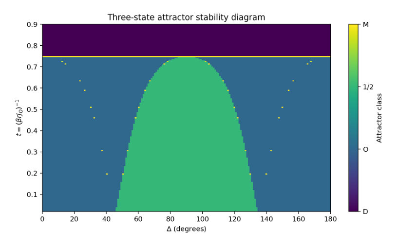
<figcaption class="paper-figure-caption"><b>Fig 1.</b> Figure 1: Three-state attractor/stability diagram obtained from Eq. (16) using the numerical protocol described in the text. D denotes the uniform high-temperature fixed point, O an ordered fixed point, 1/2 a period-two cycle, and M unresolved or other modulated behavior near stability boundaries. The analytic linear-stability threshold of D is t = 3/4.</figcaption>
</figure>
<figure class="paper-figure-card">
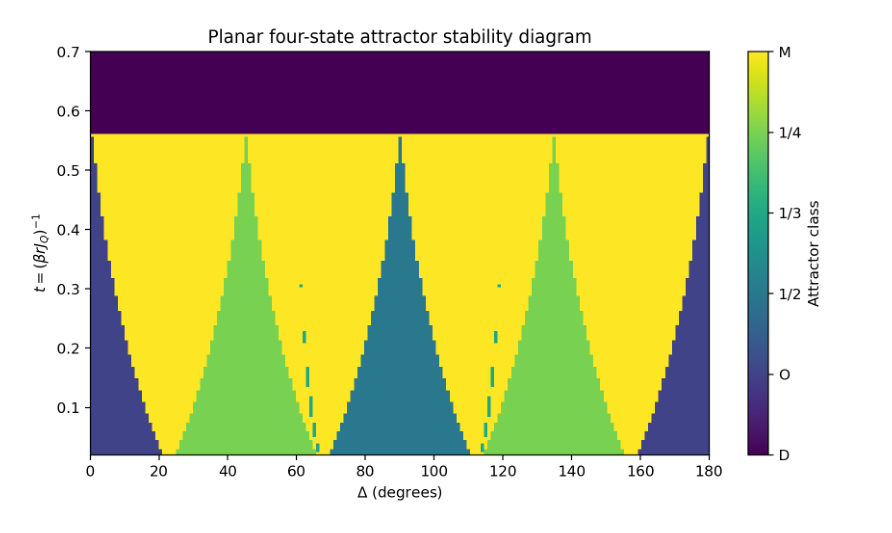
<figcaption class="paper-figure-caption"><b>Fig 2.</b> Figure 2: Planar four-state attractor/stability diagram reconstructed from Eqs. (16) and (23). D denotes the uniform fixed point, O an ordered fixed point, 1/2, 1/3, and 1/4 the indicated periods when present, and M all other detected or unresolved modulated behavior. The analytic stability threshold of D is t = 9/16.</figcaption>
</figure>
<figure class="paper-figure-card">
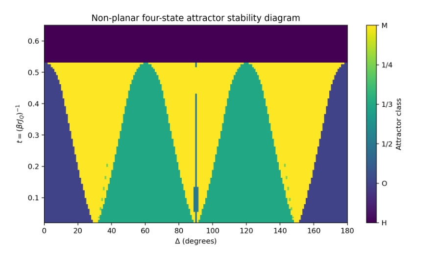
<figcaption class="paper-figure-caption"><b>Fig 3.</b> Figure 3: Non-planar four-state attractor/stability diagram reconstructed directly from Eqs. (16) and (27). H is the high-temperature symmetry-preserving branch of the anisotropic state set, O an ordered fixed point, and the remaining labels denote periodic or more general modulated attractors. In particular, the stated model produces prominent period-three sectors as well as the period-two structure near ∆= 90◦.</figcaption>
</figure>
</div>

<p><strong>Summary.</strong> This paper analyzes the modulated structures in a 3D cholesteric liquid crystal model by mapping its statistical mechanics onto a nonlinear recursion on a Cayley tree. By examining different discrete approximations, the authors predict the emergence of various stable periodic attractors, demonstrating how chirality dictates the selection of modulated critical modes. The work highlights the difference between mathematical attractor stability and true thermodynamic equilibrium.</p>
<p><strong>Why it may be interesting.</strong> The use of recursive lattice structures and stability analysis of nonlinear maps to characterize phase behavior in soft matter systems provides a powerful, non-equilibrium theoretical tool applicable to complex many-body systems.</p>
<details>
<summary>Detailed structure</summary>
<p><strong>Main problem.</strong> The study investigates the formation and stability of modulated structures within discrete approximations of a three-dimensional cholesteric liquid crystal model.</p>
<p><strong>Main result.</strong> The analysis reveals that the system supports various modulated attractors (e.g., period-two, period-three) whose stability depends critically on the chosen lattice discretization and the chirality parameter $\Delta$.</p>
<p><strong>Method.</strong> The statistical problem is mapped onto a nonlinear recursion relation on a rooted Cayley tree, which is analyzed in the infinite-coordination limit as a softmax map for state probabilities.</p>
<p><strong>Model / system.</strong> The system is a chiral nematic liquid crystal modeled using a rotated quadrupolar interaction on a lattice. Approximations are made by restricting local directors to finite state sets (e.g., Cartesian three-state or planar four-state).</p>
<p><strong>Key observables.</strong> Attractor stability (fixed points and cycles), periodicity (e.g., period-two, period-three), and the selection of a modulated critical mode.</p>
<p><strong>Important parameters / regimes.</strong> Chirality parameter ($\Delta$), reduced temperature ($t$), and the lattice discretization type (three-state, planar four-state, non-planar four-state).</p>
<p><strong>Assumptions / limitations.</strong> The analysis interprets results as attractor/stability diagrams, not guaranteed equilibrium phase diagrams, due to the nature of the recursive map analysis.</p>
<p><strong>Figures summary.</strong> Figures illustrate the attractor/stability diagrams for the three-state and planar four-state discretizations, showing regions corresponding to different stable periodic states.</p>
<p><strong>Paper structure.</strong> The paper analyzes the model on a Cayley tree, deriving a nonlinear recursion. It then systematically analyzes three different state discretizations (three-state, planar four-state, non-planar four-state), determining the stability of the resulting map's fixed points and periodic attractors as a function of temperature and chirality.</p>
</details>
<details>
<summary>Abstract</summary>
<p>We study finite-state approximations to a chiral nematic lattice model whose local directors are embedded in three-dimensional orientational space. The model analyzed here is formulated in terms of a rotated quadrupolar interaction, which provides a direct angular chirality parameter $Δ$ and reduces to the usual planar chiral-nematic form for directors confined to the xy plane. On a rooted Cayley tree, the statistical problem is written as a nonlinear recursion for branch partition functions. In the infinite-coordination limit, with $rJ_Q$ fixed, the recursion becomes a softmax map for the state probabilities. We analyze Cartesian three-state, planar four-state, and non-planar four-state discretizations. The first supports ordered and period-two attractors, whereas the planar four-state discretization displays a sequence of commensurate and longer-period modulated attractors. Its disordered fixed point loses stability at $t=9/16$ through a complex-conjugate pair with phase $q=\pm 2Δ$, so a modulated critical mode is selected for every nonzero chirality. The non-planar four-state set is intrinsically anisotropic and, when the stated model is reconstructed directly, supports prominent period-three as well as period-two and higher-period cycles. Because attractor stability does not by itself establish global thermodynamic stability, the diagrams reported here are interpreted as attractor/stability diagrams rather than equilibrium phase diagrams.</p>
</details>
<p><sub><a href="#top">↑ back to top</a></sub></p>

<p><a id="paper-2609.15259"></a></p>
<h3 id="borromean-criticality-in-two-dimensions"><a href="http://arxiv.org/abs/2609.15259v1">Borromean Criticality in Two Dimensions</a></h3>
<p><strong>Authors:</strong> Alexandru Golic, Igor Timoshuk, Albert Samoilenka, Egor Babaev, Boris Svistunov<br>
<strong>Type:</strong> theory · <strong>Category:</strong> statistical mechanics · <strong>PDF:</strong> <a href="https://arxiv.org/pdf/2609.15259v1">https://arxiv.org/pdf/2609.15259v1</a><br>
<strong>Analysis basis:</strong> full PDF text, analyzed in chunks
<strong>Topic relevance:</strong> <code>Keldysh / 2PI / non-Gaussian methods</code> <strong>1/5</strong> · <code>analog quantum simulation</code> <strong>1/5</strong> · <code>non-equilibrium universality</code> <strong>1/5</strong></p>
<div class="figure-strip-hint">↔ Scroll figures horizontally</div>
<div class="paper-figures-scroll">
<figure class="paper-figure-card">
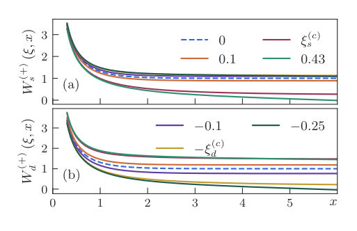
<figcaption class="paper-figure-caption"><b>Fig 1.</b> FIG. 1. Scaling functions W (+) s (ξ, x) and W (+) d (ξ, x) defined in Eqs. (18) and (19). Different colors correspond to different values of parameter ξ, as indicated in the legends.</figcaption>
</figure>
<figure class="paper-figure-card">
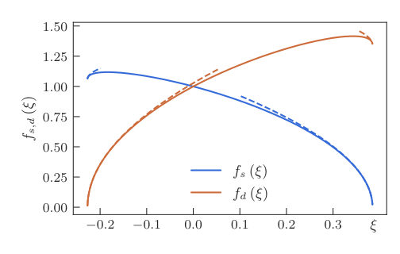
<figcaption class="paper-figure-caption"><b>Fig 2.</b> FIG. 2. Numerically calculated functions fs (ξ) and fd (ξ) defined within the interval ξ ∈[−ξ(c) d , ξ(c) s ]. The dashed lines are the fits to corresponding asymptotic regimes (26)–(30).</figcaption>
</figure>
<figure class="paper-figure-card">

<figcaption class="paper-figure-caption"><b>Fig 3.</b> Fig. 2], yielding, in particular, precise relations for the two phase boundaries</figcaption>
</figure>
<figure class="paper-figure-card">
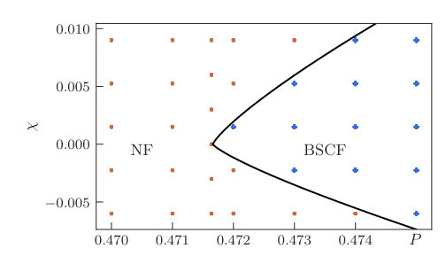
<figcaption class="paper-figure-caption"><b>Fig 4.</b> FIG. 3. Phase diagram of the J-current model in the close vicinity of the critical point of the component-symmetric regime taking place at P = P0 = 0.4716, χ = 0. The phase boundaries have the shape χ ∝±(P −P)φ/2 controlled by the golden-ratio exponent φ; this shape comes from Eqs. (23)– (24) with parameters C and D being linear functions of P and χ, respectively. The dots indicate the model parameters for which numerical simulations were performed, and the re- sults demonstrate a perfect match with RG predictions. Red (blue) dots correspond to the normal (BSCF) state. At each point we studied 12 different sample sizes, from L = 40 to L = 300 (see, e.g., Fig. 4), performing ∼5 · 1013 Monte...</figcaption>
</figure>
<figure class="paper-figure-card">
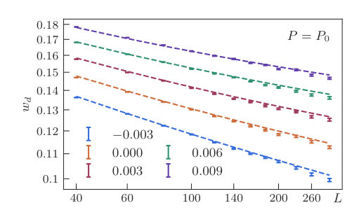
<figcaption class="paper-figure-caption"><b>Fig 5.</b> FIG. 4. The flow of wd with the system size at P = P0 and various values of χ indicated in the legend. The data points with error bars are obtained by Monte Carlo simulation of the J-current model. The dashed lines are the RG predictions. The only fitting parameter is the coefficient D0 in the relation D = D0χ. The values of the other parameters are already fixed by the properties of the symmetric regime χ = 0.</figcaption>
</figure>
</div>

<p><strong>Summary.</strong> This work analyzes the critical phase transition in Borromean Supercounterfluids (BSCF) in 2D, a system characterized by more topological excitations than Goldstone modes. Using Renormalization Group theory, the authors derive scaling laws that predict a BKT-type transition, providing quantitative predictions for superfluid stiffnesses near the critical point.</p>
<p><strong>Why it may be interesting.</strong> The study provides a deep theoretical understanding of topological phase transitions in multicomponent superfluids, connecting concepts like Goldstone modes, vortex physics, and critical exponents using advanced RG techniques.</p>
<details>
<summary>Detailed structure</summary>
<p><strong>Main problem.</strong> The paper investigates the Berezinskii-Kosterlitz-Thouless (BKT)-type phase transition in Borromean Supercounterfluids (BSCF) in two dimensions, especially when symmetry is slightly broken.</p>
<p><strong>Main result.</strong> The critical behavior is predicted to be BKT-type, and the analysis yields explicit scaling laws for superfluid stiffnesses and phase boundaries, showing how topological excitations govern the transition.</p>
<p><strong>Method.</strong> The primary method involves developing and solving Renormalization Group (RG) equations for the system's effective action, analyzing flow equations in different proximity regimes to critical points.</p>
<p><strong>Model / system.</strong> The system is a counterflow superfluid (SCF) with $N \ge 3$ components, modeled using the J-current model or a two-component representation of a BSCF. The key feature is the existence of $N$ elementary topological excitations despite $N-1$ Goldstone modes.</p>
<p><strong>Key observables.</strong> Superfluid stiffnesses ($\Lambda_s, \Lambda_d$), vortex fugacities ($g_s, g_d$), and correlation lengths ($\lambda_c$).</p>
<p><strong>Important parameters / regimes.</strong> The asymmetry parameter ($\Gamma$ or $\xi$), the golden ratio constant ($\varphi$), and the critical coupling constants ($\xi^{(c)}_s, \xi^{(c)}_d$).</p>
<p><strong>Assumptions / limitations.</strong> The analysis relies on linearizing the RG equations near the symmetric point and making approximations regarding the smallness of asymmetry parameters.</p>
<p><strong>Figures summary.</strong> Figures illustrate scaling functions for superfluid stiffnesses, the phase diagram showing boundaries dependent on the golden ratio, and the flow of correlation lengths with system size.</p>
<p><strong>Paper structure.</strong> The paper progresses by establishing the RG framework for the multicomponent superfluid, analyzing the symmetric limit, then introducing asymmetry via coupled RG equations, and finally deriving explicit scaling solutions for different proximity regimes to the critical point.</p>
</details>
<details>
<summary>Abstract</summary>
<p>The characteristic feature of counterflow superfluids consisting of $N\geq 3$ components -- the so-called Borromean supercounterfluids (BSCF) -- is the presence of $N$ distinct elementary topological excitations (vortices) despite having only $N-1$ independent Goldstone modes. We show that this remarkable property clearly manifests itself at the Berezinskii-Kosterlitz-Thouless-type transition from the BSCF to the normal state, under the conditions of slight to moderate deviations from the case of exact intercomponent symmetry. More generally, our analysis also applies to any multicomponent superfluid with intercomponent drag fine-tuned to the value when certain composite vortices compete energetically with elementary ones.</p>
</details>
<p><sub><a href="#top">↑ back to top</a></sub></p>

<p><a id="paper-2609.14389"></a></p>
<h3 id="phase-transitions-and-modulation-in-dense-oscillatory-associative-memories"><a href="http://arxiv.org/abs/2609.14389v1">Phase Transitions and Modulation in Dense Oscillatory Associative Memories</a></h3>
<p><strong>Authors:</strong> Shurui Liu, Zhuchun Li<br>
<strong>Type:</strong> both · <strong>Category:</strong> disordered systems and neural networks · <strong>PDF:</strong> <a href="https://arxiv.org/pdf/2609.14389v1">https://arxiv.org/pdf/2609.14389v1</a><br>
<strong>Analysis basis:</strong> abstract only; PDF text extraction failed or PDF unavailable
<strong>Topic relevance:</strong> <code>analog quantum simulation</code> <strong>1/5</strong> · <code>driven-dissipative phase transition</code> <strong>1/5</strong> · <code>non-equilibrium universality</code> <strong>1/5</strong></p>
<p><strong>Summary.</strong> This paper analyzes high-order Winfree models for associative memory, treating memory capacity limitations as a problem of phase transitions. By using local stability criteria, the authors demonstrate that crosstalk noise induces a sequence of ferromagnetic, mixed, and spin-glass transitions as the memory load increases. They provide theoretical phase boundaries and practical circuit designs for mitigating these effects.</p>
<p><strong>Why it may be interesting.</strong> The study connects concepts from neural network dynamics (associative memory) with statistical physics phenomena like spin-glass transitions, which are relevant to understanding complex many-body systems.</p>
<details>
<summary>Detailed structure</summary>
<p><strong>Main problem.</strong> The paper investigates the memory performance of high-order Winfree models used for oscillatory associative memory.</p>
<p><strong>Main result.</strong> It shows that increasing memory load causes a cascade of phase transitions (ferromagnetic, mixed, and spin-glass) driven by crosstalk noise.</p>
<p><strong>Method.</strong> The performance is characterized using the local-stability dichotomy between stored and unstored patterns, and phase boundaries are derived for different model types.</p>
<p><strong>Model / system.</strong> The study uses high-order Winfree models for oscillatory associative memory, considering both polynomial and exponential forms.</p>
<p><strong>Key observables.</strong> Memory performance, phase boundaries, and the type of phase transition (ferromagnetic, mixed, spin-glass).</p>
<p><strong>Important parameters / regimes.</strong> Memory load (increasing), crosstalk noise.</p>
<p><strong>Assumptions / limitations.</strong> The analysis relies on the local-stability dichotomy criterion for characterizing memory performance.</p>
<p><strong>Figures summary.</strong> The paper presents corresponding circuit designs and numerical simulations that support the theoretical predictions.</p>
<p><strong>Paper structure.</strong> The structure involves introducing the high-order models, characterizing performance via local stability, deriving phase boundaries, developing modulation schemes, and concluding with circuit designs and simulations.</p>
</details>
<details>
<summary>Abstract</summary>
<p>We introduce high-order Winfree models for oscillatory associative memory. We characterize memory performance through the local-stability dichotomy between stored and unstored patterns. Using this criterion, we show that crosstalk noise drives a cascade of ferromagnetic, mixed, and spin-glass transitions as the memory load increases. For both polynomial and exponential Winfree models, we derive the phase boundaries and develop auxiliary-field modulation schemes adapted to the different phases. We further present corresponding circuit designs and numerical simulations that support our theoretical predictions.</p>
</details>
<p><sub><a href="#top">↑ back to top</a></sub></p>

<p><a id="paper-2609.14524"></a></p>
<h3 id="preparation-of-multimode-noon-states-via-floquet-engineered-conditional-chiral-excitation"><a href="http://arxiv.org/abs/2609.14524v1">Preparation of Multimode NOON States via Floquet-Engineered Conditional Chiral Excitation</a></h3>
<p><strong>Authors:</strong> Mengxue Li, Bo Tian, H. Z. Shen, Haodi Liu, Gangcheng Wang<br>
<strong>Type:</strong> theory · <strong>Category:</strong> quantum information and computing · <strong>PDF:</strong> <a href="https://arxiv.org/pdf/2609.14524v1">https://arxiv.org/pdf/2609.14524v1</a><br>
<strong>Analysis basis:</strong> full PDF text, analyzed in chunks
<strong>Topic relevance:</strong> <code>analog quantum simulation</code> <strong>1/5</strong> · <code>methods for driven-dissipative</code> <strong>1/5</strong> · <code>quantum measurements</code> <strong>1/5</strong></p>
<div class="figure-strip-hint">↔ Scroll figures horizontally</div>
<div class="paper-figures-scroll">
<figure class="paper-figure-card">
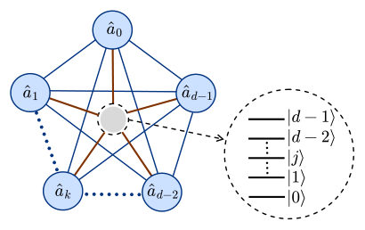
<figcaption class="paper-figure-caption"><b>Fig 1.</b> FIG. 1. Schematic diagram of the hybrid system consisting of a d- level system with adjacent level spacings ωq and d bosonic modes resonant at ωa, where the indirect coupling between bosonic modes is mediated by the d-level system.</figcaption>
</figure>
<figure class="paper-figure-card">
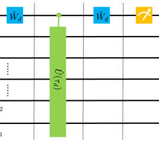
<figcaption class="paper-figure-caption"><b>Fig 2.</b> FIG. 2. Schematic diagram of the quantum circuit for generating the d-mode NOON states. It consists of the WH gate applied to the d-level system, the d-level system-controlled time evolution of the bosonic modes under ˆU(τd), a second application of the WH gate to the d-level system, and finally a projective measurement performed on the d-level system to generate the NOON state.</figcaption>
</figure>
<figure class="paper-figure-card">
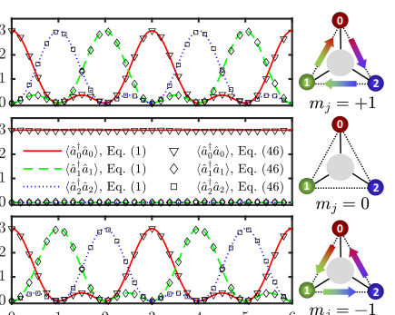
<figcaption class="paper-figure-caption"><b>Fig 3.</b> FIG. 3. Chiral dynamical properties of the excitation number distri- bution ⟨ˆa† k ˆak⟩for the three bosonic modes (k = 0, 1, 2), studied via numerical simulation based on the Floquet-engineered Hamiltonian in Eq. (1) and analytical evaluation using the effective Hamiltonian in Eq. (46). The three modes are initialized in the Fock state |3, 0, 0⟩ while the three-level system is prepared in the (a) |2⟩state, (b) |1⟩ state, and (c) |0⟩state. The red, green and blue lines correspond to bosonic modes 0, 1 and 2, respectively. The parameters are set as ωa/2π = ωq/2π = 8 GHz, G1/2π = 40 MHz, ν/2π = 1.2 GHz, and φk = 2πk/3.</figcaption>
</figure>
<figure class="paper-figure-card">
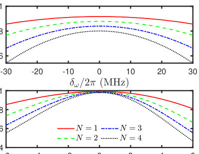
<figcaption class="paper-figure-caption"><b>Fig 4.</b> FIG. 5. Conditional-routing fidelity F as a function of (a) the fre- quency detuning δω/2π and (b) the coupling strength deviation δg/2π under the Hamiltonian with errors, for N = 1, 2, 3, 4. The parameter values here are the same as those in Fig. 3.</figcaption>
</figure>
<figure class="paper-figure-card">
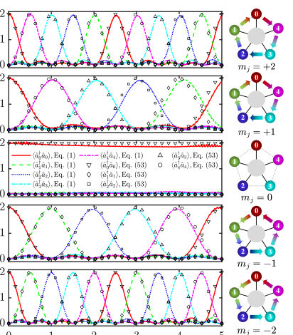
<figcaption class="paper-figure-caption"><b>Fig 5.</b> FIG. 4. Chiral dynamical properties of the excitation number distri- bution ⟨ˆa† k ˆak⟩for the five bosonic modes (k = 0, 1, 2, 3, 4), studied via numerical simulation based on the Floquet-engineered Hamiltonian in Eq. (1) and analytical evaluation using the effective Hamiltonian in Eq. (53). The five modes are initialized in the Fock state |2, 0, 0, 0, 0⟩ while the five-level system is prepared in the (a) |4⟩state, (b) |3⟩state, (c) |2⟩state, (d) |1⟩state, and (e) |0⟩state. The red, green, blue, cyan and magenta lines correspond to bosonic modes 0, 1, 2, 3 and 4, re- spectively. Here φk = 2πk/5, and other parameters are the same as those in Fig. 3.</figcaption>
</figure>
</div>

<p><strong>Summary.</strong> This paper presents a Floquet-engineered framework to generate multimode NOON states in bosonic networks. By coupling $d$ bosonic modes to a $d$-level quantum controller, the authors achieve controlled chiral routing, which realizes an exact cyclic permutation. This provides a systematic protocol for quantum-enhanced sensing applications.</p>
<p><strong>Why it may be interesting.</strong> This work provides a powerful, generalizable theoretical tool (Floquet engineering) to implement complex quantum operations (cyclic permutations) necessary for generating highly entangled states like NOON states, which are cornerstones of quantum metrology.</p>
<details>
<summary>Detailed structure</summary>
<p><strong>Main problem.</strong> The primary goal is to develop a systematic method for preparing multimode NOON states, which are crucial for achieving Heisenberg-limited phase sensitivity in quantum metrology.</p>
<p><strong>Main result.</strong> The authors establish a general Floquet construction that enables the preparation of odd-$d$-mode NOON states by controlling chiral excitation flow using a $d$-level quantum controller.</p>
<p><strong>Method.</strong> The method employs a Floquet-engineered conditional-routing framework, deriving an effective Hamiltonian that couples the bosonic modes' dynamics to the state of a multilevel controller.</p>
<p><strong>Model / system.</strong> The system is a hybrid model consisting of $d$ bosonic modes coupled to a $d$-level quantum controller. The dynamics are controlled by periodically modulated interactions, analyzed via an effective Hamiltonian $\hat{H}_{eff} = \hat{S}_z \otimes \hat{H}_{cyc}$.</p>
<p><strong>Key observables.</strong> The final state is the $d$-mode NOON state $|NOON(l)\rangle_d$; key diagnostics include the controlled cyclic permutation of bosonic excitations and the resulting phase sensitivity.</p>
<p><strong>Important parameters / regimes.</strong> The dimension $d$ must be odd ($d=2s+1$). The protocol requires tuning the controller state to control the direction of chiral excitation flow.</p>
<p><strong>Assumptions / limitations.</strong> The analysis relies on the high-frequency regime approximation (van Vleck expansion) and assumes specific energy level spacings for the controller and bosonic modes.</p>
<p><strong>Figures summary.</strong> FIG. 1 schematically illustrates the hybrid system coupling a $d$-level system to $d$ bosonic modes, mediated by the controller.</p>
<p><strong>Paper structure.</strong> The paper first introduces the physical model and the need for controlled routing. It derives the effective Hamiltonian and analyzes the controlled cyclic permutation achievable at specific time intervals. Finally, it outlines the multi-step protocol using this controlled routing to generate the target NOON states.</p>
</details>
<details>
<summary>Abstract</summary>
<p>The NOON states possess Heisenberg-limited phase sensitivity and are crucial for quantum-enhanced metrology. In our work, we develop a Floquet-engineered conditional-routing framework in which a $d$-level quantum controller mediates the dynamics of $d$ bosonic modes. For an arbitrary odd dimension $d=2s+1$, the $d$-level system can act as a ``quantum knob" by tuning its initial states to coherently control the direction of chiral excitation flow, such that different controller eigenstates generate distinct cyclic-routing branches of the bosonic excitations. By choosing $s$ harmonics, we construct an exact qudit-controlled cyclic permutation and use it to formulate a general protocol for preparing odd-$d$-mode NOON states. The same framework also enables programmable complex amplitudes through appropriate preparation of the controller state. As concrete realizations, we show that the three-mode case requires only a single harmonic and exhibits two oppositely directed chiral branches together with a stationary branch, whereas the five-mode case requires two harmonics and both nearest- and next-nearest-neighbor chiral hoppings. Meanwhile, taking the three-mode realization as a representative example, we assess the influence of systematic imperfections and dissipation on the conditional-routing dynamics and identify parameter regimes in which the routing operation remains accurate. Our results establish a systematic Floquet construction for controllable chiral routing and multimode NOON-state generation in arbitrary odd-dimensional networks, with potential applications in quantum information processing and quantum metrology.</p>
</details>
<p><sub><a href="#top">↑ back to top</a></sub></p>

<p><a id="paper-2609.14621"></a></p>
<h3 id="a-pretty-tight-converse-on-the-classical-capacity-of-generalized-amplitude-damping-channels"><a href="http://arxiv.org/abs/2609.14621v1">A pretty-tight converse on the classical capacity of generalized amplitude-damping channels</a></h3>
<p><strong>Authors:</strong> Kun Fang<br>
<strong>Type:</strong> theory · <strong>Category:</strong> quantum information and computing · <strong>PDF:</strong> <a href="https://arxiv.org/pdf/2609.14621v1">https://arxiv.org/pdf/2609.14621v1</a><br>
<strong>Analysis basis:</strong> full PDF text, analyzed in chunks
<strong>Topic relevance:</strong> <code>correlated / nonlocal dissipation</code> <strong>1/5</strong> · <code>driven-dissipative phase transition</code> <strong>1/5</strong></p>
<div class="figure-strip-hint">↔ Scroll figures horizontally</div>
<div class="paper-figures-scroll">
<figure class="paper-figure-card">
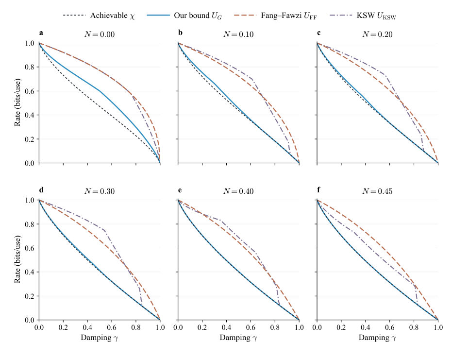
<figcaption class="paper-figure-caption"><b>Fig 1.</b> Figure 1: Classical-capacity bounds at different values of N. The upper bound UG is compared with the Holevo rate χ, the bound UKSW in [KSW20], and the Fang–Fawzi bound UFF in [FF21].</figcaption>
</figure>
<figure class="paper-figure-card">
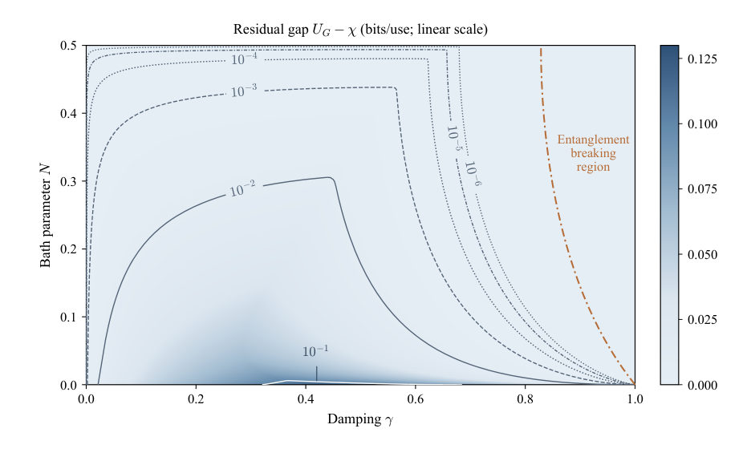
<figcaption class="paper-figure-caption"><b>Fig 2.</b> Figure 2: Residual gap UG −χ, in bits per channel use. Numerical contours mark gaps of 10−1, 10−2, 10−3, 10−4, 10−5, and 10−6 bits. The orange curve marks the entanglement-breaking boundary in (44).</figcaption>
</figure>
</div>

<p><strong>Summary.</strong> This paper tackles the open problem of finding the classical capacity for the generalized amplitude-damping channel. The authors derive a new, computable upper bound, $U_G(\gamma, N)$, by refining existing correlation measures. This bound is shown to be highly accurate, providing significant theoretical progress in quantum Shannon theory for open quantum systems.</p>
<p><strong>Why it may be interesting.</strong> This work provides a rigorous theoretical tool (a tight converse bound) for characterizing the fundamental information limits of a physically relevant open quantum system model (GADC).</p>
<details>
<summary>Detailed structure</summary>
<p><strong>Main problem.</strong> The primary goal is to determine a tight converse bound on the classical capacity of the generalized amplitude-damping channel (GADC).</p>
<p><strong>Main result.</strong> The authors derive an upper bound, $U_G(\gamma, N)$, for the classical capacity, which is shown to be pretty tight and nearly coincides with the Holevo information at non-zero temperatures.</p>
<p><strong>Method.</strong> The work revisits and refines a converse bound by deriving a computable relaxation of an existing correlation measure, utilizing techniques involving entanglement of formation and bounding conditional entropies.</p>
<p><strong>Model / system.</strong> The system analyzed is the generalized amplitude-damping channel (GADC), which models spin-relaxation ($T_1$) due to coupling to a thermal bath at non-zero temperature. The analysis is performed on qubits.</p>
<p><strong>Key observables.</strong> Classical capacity $C(A_{\gamma,N})$, Holevo information $\chi(A_{\gamma,N})$, output entropy $S(B_n)$, and correlation measures $g_E^{\gamma,N}(q)$ and $g_B^{\gamma,N}(q)$.</p>
<p><strong>Important parameters / regimes.</strong> Damping probability $\gamma$, equilibrium occupation probability $N$, and input occupation probability $q$.</p>
<p><strong>Assumptions / limitations.</strong> The derivation relies on bounding the Holevo information using the entanglement of formation and applying convexity arguments to simplify correlation measures.</p>
<p><strong>Figures summary.</strong> Figure 1 compares the derived bound $U_G$ against the Holevo rate $\chi$ and other known bounds across varying $N$ values. Figure 2 examines the residual gap between $U_G$ and $\chi$ in the entanglement-breaking regime.</p>
<p><strong>Paper structure.</strong> The paper establishes the upper bound $C(A_{\gamma,N}) \le U_G(\gamma, N)$ by bounding the Holevo information using correlation measures derived from the environment and output measurements. Subsequent sections refine these bounds by proving the optimality of the measurement strategies used in the penalty terms.</p>
</details>
<details>
<summary>Abstract</summary>
<p>The classical capacity of a quantum channel is the highest rate at which classical information can be transmitted with vanishing error. Although the capacities of many fundamental quantum channels have been established, the capacity of the generalized amplitude-damping channel remains an open problem in quantum Shannon theory. In this work, we revisit a converse bound introduced by Brandão et al. [Phys. Rev. Lett. 106, 230502 (2011)], which upper-bounds the classical capacity in terms of a correlation measure. For the generalized amplitude-damping channel, we derive a relaxation of this measure that makes the converse bound efficiently computable. Numerical comparisons demonstrate that our bound is pretty tight in general and nearly coincides with the Holevo information at nonzero temperatures, significantly improving upon existing bounds across the entire parameter range.</p>
</details>
<p><sub><a href="#top">↑ back to top</a></sub></p>

<p><a id="paper-2609.15212"></a></p>
<h3 id="comment-on-jqin-et-al-unconditional-and-robust-quantum-metrological-advantage-beyond-n00n-states-prl-130-070801-2023-and-ja-h-nielsen-etal-deterministic-quantum-phase-estimation-beyond-n00n-states-prl-130-123603-2023"><a href="http://arxiv.org/abs/2609.15212v1">Comment on J.Qin et al., Unconditional and Robust Quantum Metrological Advantage beyond N00N States, PRL 130, 070801 (2023) and J.A. H. Nielsen et.al., Deterministic Quantum Phase Estimation beyond N00N States. PRL 130, 123603 (2023)</a></h3>
<p><strong>Authors:</strong> Zdenek Hradil, Jaroslav Rehacek<br>
<strong>Type:</strong> theory · <strong>Category:</strong> quantum information and computing · <strong>PDF:</strong> <a href="https://arxiv.org/pdf/2609.15212v1">https://arxiv.org/pdf/2609.15212v1</a><br>
<strong>Analysis basis:</strong> full PDF text, analyzed in chunks
<strong>Topic relevance:</strong> <code>quantum measurements</code> <strong>1/5</strong> · <code>quantum optics experiment</code> <strong>1/5</strong></p>
<div class="figure-strip-hint">↔ Scroll figures horizontally</div>
<div class="paper-figures-scroll">
<figure class="paper-figure-card">
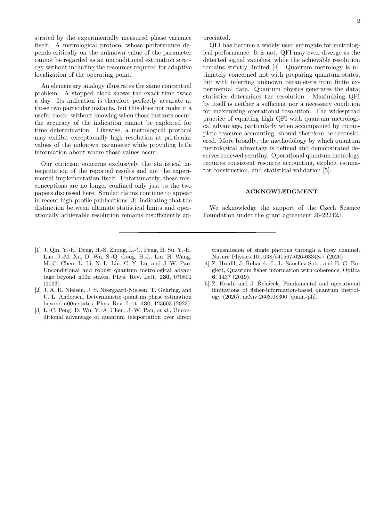
<figcaption class="paper-figure-caption"><b>Fig 1.</b> Low-resolution page preview, page 2</figcaption>
</figure>
</div>

<p><strong>Summary.</strong> This theoretical paper challenges the notion of an unconditional quantum advantage in phase sensing using squeezed vacuum states. The authors argue that by failing to account for the total experimental resources, previous analyses overestimate the metrological gain. They demonstrate that proper resource accounting reduces the scaling advantage to match classical limits.</p>
<p><strong>Why it may be interesting.</strong> It provides a crucial methodological correction in quantum metrology, warning researchers against over-interpreting QFI as the sole measure of achievable precision.</p>
<details>
<summary>Detailed structure</summary>
<p><strong>Main problem.</strong> The paper critiques the claim of an unconditional quantum metrological advantage reported by other studies using squeezed-vacuum phase sensing.</p>
<p><strong>Main result.</strong> The reported advantage is statistically unjustified because the Quantum Fisher Information (QFI) per trial fails to account for the total experimental resources required for accurate estimation.</p>
<p><strong>Method.</strong> The analysis relies on re-evaluating the resource scaling by consistently accounting for the total number of photons ($N$) rather than just the QFI per trial.</p>
<p><strong>Model / system.</strong> The discussion centers on quantum metrology applied to single-mode squeezed vacuum states used for phase sensing.</p>
<p><strong>Key observables.</strong> Quantum Fisher Information (QFI), total number of photons ($N$), and the achievable phase resolution $(\Delta\phi)^2$.</p>
<p><strong>Important parameters / regimes.</strong> Squeezing parameter ($r$), number of repetitions ($n$), and the total resource $N = nar{n}$.</p>
<p><strong>Assumptions / limitations.</strong> The critique focuses on the statistical interpretation of the results, assuming the underlying physical model of phase estimation is correct.</p>
<p><strong>Figures summary.</strong> References are made to Figure 3(a), which reportedly shows calibration curves where statistical fluctuations are smaller than the symbol size.</p>
<p><strong>Paper structure.</strong> The paper proceeds by identifying the core claim, establishing the theoretical framework (Cramér–Rao inequality), developing the resource accounting critique, and concluding that the advantage vanishes upon proper resource normalization.</p>
</details>
<details>
<summary>Abstract</summary>
<p>The papers by Qin et al. [1] and Nielsen et al. [2] report an unconditional quantum metrological advantage based on squeezed-vacuum phase sensing. The principal evidence for this claim is the Quantum Fisher Information (QFI) evaluated per trial or per detected photon, which is subsequently interpreted as a measure of metrological performance. This interpretation is statistically unjustified because it does not account for the total experimental resources required to construct an estimator. Consequently, the reported protocols do not provide an unconditional metrological advantage over classical phase-sensing strategies when resource accounting is performed consistently.</p>
</details>
<p><sub><a href="#top">↑ back to top</a></sub></p>

<p><a id="paper-2609.15958"></a></p>
<h3 id="stripe-like-superconducting-enhancement-and-coexisting-magnetic-texture-in-an-infinite-layer-nickelate"><a href="http://arxiv.org/abs/2609.15958v1">Stripe-Like Superconducting Enhancement and Coexisting Magnetic Texture in an Infinite Layer Nickelate</a></h3>
<p><strong>Authors:</strong> Ryan Laing, Dung Vu, Jacob Pfund, Wenzheng Wei, Frederick J. Walker, Haiyan Tan, Pavel Volkov, Menka Jain, Charles Ahn, Ilya Sochnikov<br>
<strong>Type:</strong> experiment · <strong>Category:</strong> strongly correlated electrons · <strong>PDF:</strong> <a href="https://arxiv.org/pdf/2609.15958v1">https://arxiv.org/pdf/2609.15958v1</a><br>
<strong>Analysis basis:</strong> abstract only; PDF text extraction failed or PDF unavailable
<strong>Topic relevance:</strong> <code>analog quantum simulation</code> <strong>1/5</strong> · <code>quantum measurements</code> <strong>1/5</strong></p>
<p><strong>Summary.</strong> Researchers used scanning SQUID microscopy on nickelate films to study the superconducting state. They observed a non-uniform superconducting pattern coexisting with a weak magnetic texture. These findings suggest that a competing magnetic phase is the primary cause of the unusually broad superconducting transitions in these materials.</p>
<p><strong>Why it may be interesting.</strong> The investigation into competing magnetic phases and non-uniform superconductivity in nickelates provides insights into charge/spin ordering mechanisms relevant to strongly correlated electron systems, which can inform models of unconventional superconductivity.</p>
<details>
<summary>Detailed structure</summary>
<p><strong>Main problem.</strong> Nickelate thin films, promising analogs to cuprates, exhibit poorly understood broadened superconducting transitions.</p>
<p><strong>Main result.</strong> The study found a highly non-uniform superconducting state characterized by a robust stripe-like enhancement pattern coexisting with a weakly-magnetic texture, suggesting a competing magnetic phase causes the transition broadening.</p>
<p><strong>Method.</strong> Scanning SQUID microscopy was used to investigate local superfluid density and magnetic texture.</p>
<p><strong>Model / system.</strong> The system studied is optimally doped Nd1-xEu_xNiO2 (NENO) thin films grown via molecular beam epitaxy.</p>
<p><strong>Key observables.</strong> Local superfluid density, magnetic texture, and spatially resolved susceptibility imaging.</p>
<p><strong>Important parameters / regimes.</strong> Optimal doping level (x=0.25), mesoscopic landscape of electronic and magnetic inhomogeneities.</p>
<p><strong>Assumptions / limitations.</strong> The broadening of the superconducting transition is attributed to phase separation caused by competing phases.</p>
<p><strong>Paper structure.</strong> The paper uses local measurements to investigate the superconducting state and magnetic texture in NENO films, focusing on the non-uniformity and stripe-like patterns observed near the phase transition.</p>
</details>
<details>
<summary>Abstract</summary>
<p>Despite their promise as structural and electronic analogs to cuprates, nickelate thin films consistently exhibit broadened superconducting transitions in many experiments that remain poorly understood. Local measurements are ideal for revealing the presence of defects or competing phases, which may cause this transition broadening through a phase-separation. Here, we use scanning SQUID microscopy to investigate local superfluid density and magnetic texture of optimally doped $\mathrm{Nd}_{1-x}\mathrm{Eu}_{x}\mathrm{NiO}_{2}$ (NENO) (x=0.25) grown via molecular beam epitaxy. We observed a weakly-magnetic texture coexisting with superconductivity. Spatially resolved susceptibility imaging reveals a highly non-uniform superconducting state, characterized by a robust stripe-like enhancement pattern appearing near the phase transition. By resolving the mesoscopic landscape of electronic and magnetic inhomogeneities, these findings suggest that a competing magnetic phase is a primary contributor to the unusually broad superconducting transitions of these optimally doped NENO samples. Understanding the uncovered superconducting enhancement may provide a path to raising superconducting temperatures in these materials.</p>
</details>
<p><sub><a href="#top">↑ back to top</a></sub></p>

<p><a id="paper-2609.15302"></a></p>
<h3 id="universality-from-quadratic-angular-momentum-operations-exact-dynamical-lie-algebras-and-the-role-of-the-casimir-obstruction"><a href="http://arxiv.org/abs/2609.15302v1">Universality from Quadratic Angular-Momentum Operations: Exact Dynamical Lie Algebras and the Role of the Casimir Obstruction</a></h3>
<p><strong>Authors:</strong> Tim Heib, Pérola Milman<br>
<strong>Type:</strong> theory · <strong>Category:</strong> quantum information and computing · <strong>PDF:</strong> <a href="https://arxiv.org/pdf/2609.15302v1">https://arxiv.org/pdf/2609.15302v1</a><br>
<strong>Analysis basis:</strong> full PDF text, analyzed in chunks
<strong>Topic relevance:</strong> <code>analog quantum simulation</code> <strong>1/5</strong> · <code>quantum measurements</code> <strong>1/5</strong></p>
<div class="figure-strip-hint">↔ Scroll figures horizontally</div>
<div class="paper-figures-scroll">
<figure class="paper-figure-card">
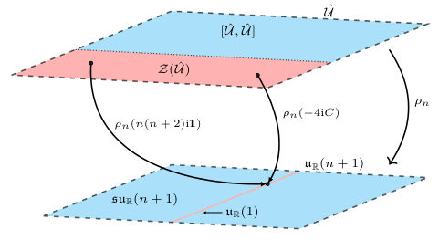
<figcaption class="paper-figure-caption"><b>Fig 1.</b> FIG. 1. Schematic illustration of the surjective but non- injective spin-n/2 representation ρn ∶ˆU →uR(n + 1). Its re- strictions to [ ˆU, ˆU] and Z( ˆU) map onto suR(n+1) and uR(1), respectively. In particular, the distinct central elements −4iC and n(n + 2)i1 have the same image, in(n + 2)1n+1, because ρn(C) = −n(n + 2)1n+1/4.</figcaption>
</figure>
</div>

<p><strong>Summary.</strong> This theoretical paper rigorously analyzes quantum control universality for spin systems by examining the dynamical Lie algebra generated by low-order operations. It proves that while control is universal within fixed subspaces, the algebra generated by quadratic terms is obstructed from reaching the full enveloping algebra of su(2). This establishes precise conditions for special-unitary and full-unitary universality.</p>
<p><strong>Why it may be interesting.</strong> It provides a deep, algebraic understanding of quantum control limitations, moving beyond simple gate set characterizations to identify fundamental structural obstructions in the underlying Lie algebra.</p>
<details>
<summary>Detailed structure</summary>
<p><strong>Main problem.</strong> The paper investigates the algebraic conditions under which a finite set of elementary quantum operations can achieve universal control over a quantum system's evolution.</p>
<p><strong>Main result.</strong> While linear and quadratic operations provide universal control within fixed particle-number subspaces, the dynamical Lie algebra generated by these elements fails to generate the full universal enveloping algebra of su(2) due to a Casimir obstruction.</p>
<p><strong>Method.</strong> The analysis employs advanced Lie algebra techniques, comparing the generated dynamical Lie algebra to the full universal enveloping algebra using concepts like the Casimir element and PBW filtration.</p>
<p><strong>Model / system.</strong> The system models quantum control on symmetric subspaces of identical spin-1/2 particles, which are isomorphic to spin-N/2 representations of su(2). The control operations include rotations and quadratic, spin-squeezing interactions.</p>
<p><strong>Key observables.</strong> The generated dynamical Lie algebra ($\langle G 
angle_{	ext{Lie}}$) and its relation to $\mathfrak{su}_{\mathbb{R}}(n+1)$ and $\mathfrak{u}_{\mathbb{R}}(n+1)$.</p>
<p><strong>Important parameters / regimes.</strong> The degree of the generating operators (at most two) and the spin quantum number $n/2$.</p>
<p><strong>Assumptions / limitations.</strong> The analysis distinguishes between fixed-sector universality (which holds) and the full abstract Lie algebra structure (where an obstruction exists).</p>
<p><strong>Paper structure.</strong> The paper first establishes the physical context of universality using spin systems, then rigorously analyzes the generated Lie algebra structure, identifying the Casimir obstruction, and finally determining the resulting special-unitary and full-unitary universality classes.</p>
</details>
<details>
<summary>Abstract</summary>
<p>Universality relies on combining operators with different algebraic properties, which depend on the physical structure of the Hilbert space encoding the information. Systems of identical symmetric particles---including bosons and symmetric collections of spin-$1/2$ particles---can be mapped to angular-momentum systems, where rotations supplemented by quadratic, spin-squeezing interactions provide universal control. We revisit universality in this framework and confirm that such linear and quadratic operations provide universal control on every fixed-particle-number subspace. At the abstract level, however, we show that the dynamical Lie algebra generated by all degree-at-most-two elements does not exhaust the full universal enveloping algebra of $\mathfrak{su}_{\mathbb{R}}(2)$, contrary to a stronger claim made previously: higher powers of the quadratic Casimir element cannot be generated by commutators and linear combinations. This obstruction does not conflict with fixed-sector universality because, under a fixed irreducible spin-$n/2$ representation, all powers of the Casimir element act as scalar multiples of the identity. We determine the resulting abstract dynamical Lie algebras exactly and show that the central-free and full degree-at-most-two algebras map, respectively, onto $\mathfrak{su}_{\mathbb{R}}(n+1)$ and $\mathfrak{u}_{\mathbb{R}}(n+1)$, establishing special-unitary and full-unitary universality. We further derive a practical degree-two universality criterion and discuss finite-dimensional SSRC universality.</p>
</details>
<p><sub><a href="#top">↑ back to top</a></sub></p>

<p><a id="paper-2609.13550"></a></p>
<h3 id="an-entropic-characterization-of-haag-duality"><a href="http://arxiv.org/abs/2609.13550v1">An entropic characterization of Haag duality</a></h3>
<p><strong>Authors:</strong> Ruizhi Liu, Lauritz van Luijk<br>
<strong>Type:</strong> theory · <strong>Category:</strong> strongly correlated electrons · <strong>PDF:</strong> <a href="https://arxiv.org/pdf/2609.13550v1">https://arxiv.org/pdf/2609.13550v1</a><br>
<strong>Analysis basis:</strong> full PDF text, analyzed in chunks
<strong>Topic relevance:</strong> <code>analog quantum simulation</code> <strong>1/5</strong></p>
<div class="figure-strip-hint">↔ Scroll figures horizontally</div>
<div class="paper-figures-scroll">
<figure class="paper-figure-card">
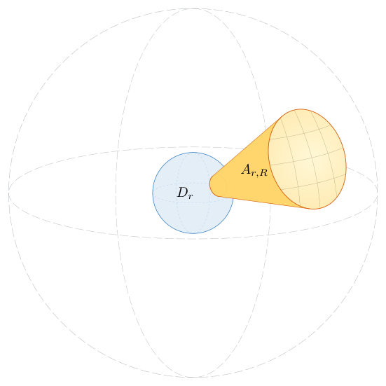
<figcaption class="paper-figure-caption"><b>Fig 1.</b> Figure 1: Geometry in three dimensions for a cone A: We are interested in the mutual information between a ball Dr of radius r (blue) and the exterior of a ball of radius R &gt; r, conditioned on Ar,R (yellow), the part of the cone in the spherical shell of inner radius r and outer radius R. Haag duality holds if and only if the mutual information is negligible in the regime R ≫r.</figcaption>
</figure>
<figure class="paper-figure-card">
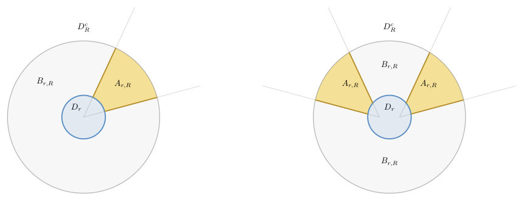
<figcaption class="paper-figure-caption"><b>Fig 2.</b> Figure 2: Geometry in a two-dimensional spin system. On the left, the region A is a single cone, on the right, it is the union of two cones. Depicted are a disk Dr of radius r (blue), and the portion Ar,R of the region A in the annulus of radii r &lt; R (yellow), as well as the remaining portion Br,R of the annulus (grey).</figcaption>
</figure>
<figure class="paper-figure-card">
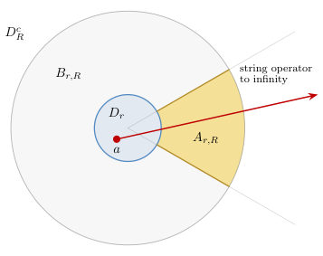
<figcaption class="paper-figure-caption"><b>Fig 3.</b> Figure 3: A state with an anyon a contained in the inner disk Dr. The anyon is attached to a semi-infinite string operator supported inside the cone.</figcaption>
</figure>
</div>

<p><strong>Summary.</strong> This theoretical paper establishes that the algebraic condition of Haag duality in quantum systems is mathematically equivalent to the vanishing of a specific limit of the conditional mutual information. By applying this to spin systems, the authors provide entropic criteria for duality, showing that for 1D chains, this means the entropy density must be zero.</p>
<p><strong>Why it may be interesting.</strong> The connection between algebraic structure (Haag duality) and quantifiable entanglement measures (mutual information) provides a powerful, non-local diagnostic tool for understanding the physical constraints of quantum field theories relevant to condensed matter systems.</p>
<details>
<summary>Detailed structure</summary>
<p><strong>Main problem.</strong> The paper aims to derive an entropic characterization of Haag duality, a fundamental concept in algebraic quantum field theory.</p>
<p><strong>Main result.</strong> Haag duality for local algebras is shown to be equivalent to the asymptotic vanishing of a suitable conditional mutual information.</p>
<p><strong>Method.</strong> The authors employ advanced concepts from quantum information theory, specifically analyzing the limits of conditional mutual information derived from von Neumann entropy calculations.</p>
<p><strong>Model / system.</strong> The analysis is motivated by quantum spin systems on lattices ($\mathbb{R}^k$) and general von Neumann algebras generated by increasing sequences of finite-dimensional matrix algebras.</p>
<p><strong>Key observables.</strong> Conditional mutual information, entanglement entropy, and topological entanglement entropy ($\gamma$).</p>
<p><strong>Important parameters / regimes.</strong> The limit of the conditional mutual information as system sizes approach infinity ($R	o\infty$ or $n	o\infty$).</p>
<p><strong>Assumptions / limitations.</strong> The derivation relies on assuming a specific form for the entanglement law (area law with subleading corrections) and the global state $\Omega$ being pure.</p>
<p><strong>Figures summary.</strong> Figures illustrate the geometry of regions (cones, annuli) in 2D and 3D used to define the conditional mutual information in the context of Haag duality.</p>
<p><strong>Paper structure.</strong> The paper builds from abstract theorems relating Haag duality to the vanishing of conditional mutual information, specializes this to 2D spin systems (cones), and concludes with the 1D case showing equivalence to zero entropy density.</p>
</details>
<details>
<summary>Abstract</summary>
<p>Motivated by Haag duality in quantum spin systems, we show that Haag duality for a pair of commuting factors generated by increasing sequences of finite-dimensional matrix algebras is equivalent to the asymptotic vanishing of a suitable conditional mutual information. For two-dimensional spin systems, let an annulus separate a finite region from the exterior. Haag duality then holds for a region $A$ if and only if the mutual information of the inner region and the exterior, conditioned on the part of $A$ inside the annulus, vanishes as the outer radius becomes large. As a corollary, assuming a strict area law with subleading corrections, Haag duality holds for single cones, and it holds for unions of two or more disjoint cones precisely when the topological entanglement entropy vanishes. For translation-invariant pure states on spin chains, half-chain Haag duality is equivalent to vanishing entropy density.</p>
</details>
<p><sub><a href="#top">↑ back to top</a></sub></p>

<p><a id="paper-2609.15092"></a></p>
<h3 id="bias-and-correlations-in-quasiperiodicity-impact-on-localization-in-an-extended-aubry-andre-model"><a href="http://arxiv.org/abs/2609.15092v1">Bias and Correlations in Quasiperiodicity: Impact on Localization in an Extended Aubry-André Model</a></h3>
<p><strong>Authors:</strong> Adithya J D, Ranjan Modak, Shaon Sahoo<br>
<strong>Type:</strong> theory · <strong>Category:</strong> disordered systems and neural networks · <strong>PDF:</strong> <a href="https://arxiv.org/pdf/2609.15092v1">https://arxiv.org/pdf/2609.15092v1</a><br>
<strong>Analysis basis:</strong> full PDF text, analyzed in chunks
<strong>Topic relevance:</strong> <code>Frenkel-Kontorova</code> <strong>1/5</strong></p>
<div class="figure-strip-hint">↔ Scroll figures horizontally</div>
<div class="paper-figures-scroll">
<figure class="paper-figure-card">
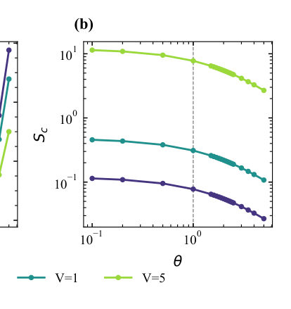
<figcaption class="paper-figure-caption"><b>Fig 1.</b> Figure 1. Variation of the bias parameter Sb and correlation parameter Sc with θ for different V .</figcaption>
</figure>
<figure class="paper-figure-card">
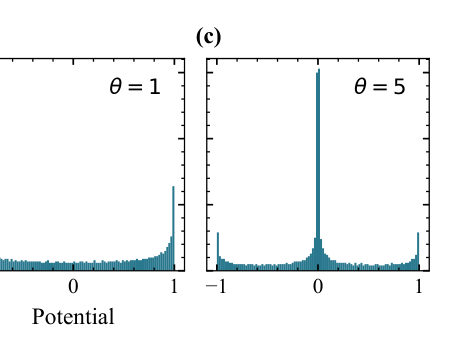
<figcaption class="paper-figure-caption"><b>Fig 2.</b> Figure 2. Probability distribution (unnormalized) of the potential term of the Hamiltonian ˆH (Eq. 2)for different values of θ (V = 1).</figcaption>
</figure>
<figure class="paper-figure-card">
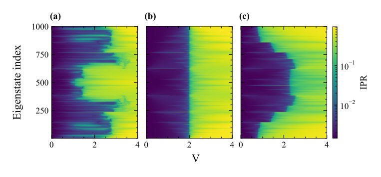
<figcaption class="paper-figure-caption"><b>Fig 3.</b> Figure 3. Contour plot of IPR in the eigenstate index and V plane for N = 1000 and for (a) θ = 0.5, (b) 1.0, and (c) 5.0.</figcaption>
</figure>
<figure class="paper-figure-card">
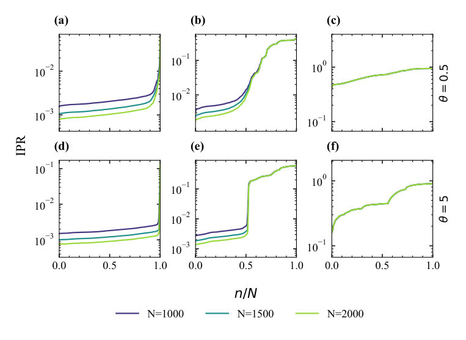
<figcaption class="paper-figure-caption"><b>Fig 4.</b> Figure 4. Shorted IPR vs normalized index for θ = 0.5 (a - c) and θ = 5.0 (d - f), with V = 0.5 (a &amp; d), V = 2 (b &amp; e) and V = 5 (c &amp; f), and different system size N.</figcaption>
</figure>
<figure class="paper-figure-card">
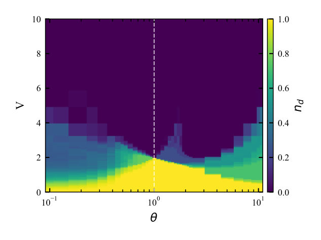
<figcaption class="paper-figure-caption"><b>Fig 5.</b> Figure 5. Phase diagram of Hamiltonian (Eq. 1) in the θ −V plane, based on the fraction of delocalized states nd.</figcaption>
</figure>
</div>

<p><strong>Summary.</strong> This paper investigates how potential bias and correlation govern electron localization in quasiperiodic systems using the extended Aubry-André model. The authors find that bias is a critical factor, establishing two thresholds that predict whether all states localize or if a fraction can remain delocalized. This refines our understanding of spectral properties beyond simple disorder models.</p>
<p><strong>Why it may be interesting.</strong> The explicit inclusion of the 'bias' parameter as a key determinant of localization transitions provides a refined, structure-based criterion for understanding spectral properties in quasiperiodic systems, which is highly relevant to understanding complex quantum materials and disordered lattices.</p>
<details>
<summary>Detailed structure</summary>
<p><strong>Main problem.</strong> To determine which potential characteristics, specifically bias and correlation, govern the localization properties of eigenstates in one-dimensional quasiperiodic systems, moving beyond the scope of simple uncorrelated disorder models.</p>
<p><strong>Main result.</strong> The study demonstrates that the potential bias, in addition to correlation, critically influences localization, leading to the identification of two critical bias thresholds that dictate whether the entire spectrum is localized or if only a fraction of states can delocalize.</p>
<p><strong>Method.</strong> The analysis employs finite-size scaling of the Inverse Participation Ratio (IPR) and characterizes the potential using quantifiable parameters for correlation ($S_c$) and bias ($S_b$).</p>
<p><strong>Model / system.</strong> The work investigates the extended Aubry-André (AA) model, a one-dimensional tight-binding Hamiltonian with a quasiperiodic potential $\epsilon_i$. The potential is systematically controlled by two parameters: correlation and bias.</p>
<p><strong>Key observables.</strong> Inverse Participation Ratio (IPR), Correlation Parameter ($S_c$), and Bias Parameter ($S_b$).</p>
<p><strong>Important parameters / regimes.</strong> Potential strength ($V$), deformation parameter ($ heta$), and the critical bias thresholds ($S_b^<em>, S_b^{</em>*}$).</p>
<p><strong>Assumptions / limitations.</strong> The analysis relies on the thermodynamic limit ($N 	o \infty$) and assumes the extended AA model has a symmetric potential with a vanishing mean ($\epsilon=0$).</p>
<p><strong>Figures summary.</strong> Figures illustrate the variation of $S_b$ and $S_c$ with $   heta$ and $V$, and show the IPR profile for different $    heta$ and $V$ to distinguish between localized and delocalized states.</p>
<p><strong>Paper structure.</strong> The paper establishes the physical problem by contrasting quasiperiodic potentials with Anderson localization, introduces the extended AA model and its parameters ($S_c, S_b$), presents the core results regarding the critical bias thresholds, and concludes by testing the framework with zero-bias models.</p>
</details>
<details>
<summary>Abstract</summary>
<p>Unlike in Anderson localization - where any amount of uncorrelated disorder localizes all eigenstates in one dimension - a one-dimensional system with quasiperiodic potential supports a richer range of localization behavior. This paper investigates the fundamental question of which potential characteristics govern localization properties. We characterize quasiperiodic potentials using two independent parameters, correlation and bias, and demonstrate that bias, in addition to correlation, critically influences localization. Through the study of an extended Aubry-André model, in which a tunable parameter allows systematic control over both the bias and correlation of the potential, we show that bias is key in determining the fraction of delocalized states. An increase in the potential strength generally enhances the tendency toward localization, while simultaneously strengthening the correlations in the quasiperiodic potential. This apparent counterintuitive behavior can be understood in terms of the bias parameter: increasing the potential strength reduces the bias, which in turn favors localization. For the family of Hamiltonians considered, we identify two critical bias thresholds: below the lower threshold, the entire spectrum is localized, whereas below the higher threshold, at most a fraction of the states can be delocalized, precluding delocalization of the entire spectrum. To further test our framework, we examine a quasiperiodic model with zero bias and find that, despite its correlated nature, all states become localized even at very weak potential strengths - recovering the Anderson-like scenario.</p>
</details>
<p><sub><a href="#top">↑ back to top</a></sub></p>

<p><a id="paper-2609.14172"></a></p>
<h3 id="certified-robustness-of-quantum-spin-textures-under-magnetic-field-perturbations"><a href="http://arxiv.org/abs/2609.14172v1">Certified robustness of quantum spin textures under magnetic-field perturbations</a></h3>
<p><strong>Authors:</strong> Raúl Sánchez Galán, Robert Wieser<br>
<strong>Type:</strong> theory · <strong>Category:</strong> strongly correlated electrons · <strong>PDF:</strong> <a href="https://arxiv.org/pdf/2609.14172v1">https://arxiv.org/pdf/2609.14172v1</a><br>
<strong>Analysis basis:</strong> full PDF text, analyzed in chunks
<strong>Topic relevance:</strong> <code>analog quantum simulation</code> <strong>1/5</strong></p>
<div class="figure-strip-hint">↔ Scroll figures horizontally</div>
<div class="paper-figures-scroll">
<figure class="paper-figure-card">
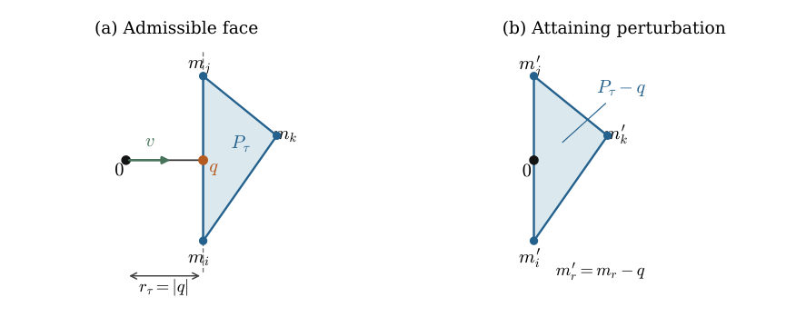
<figcaption class="paper-figure-caption"><b>Fig 1.</b> Figure 1: Planar schematic of the projection construction when all face weights equal one. (a) The face hull Pτ excludes the origin. Its closest point q determines the radius rτ = |q| and a unit separating vector v = q/|q|, with v · x ≥rτ for x ∈Pτ. (b) Translating all three moments by −q makes the hull contain zero, attaining the distance to inadmissibility. The same construction holds in R3; unequal weights and fixed data replace the hull by (7) and the shifts by −wiq.</figcaption>
</figure>
<figure class="paper-figure-card">
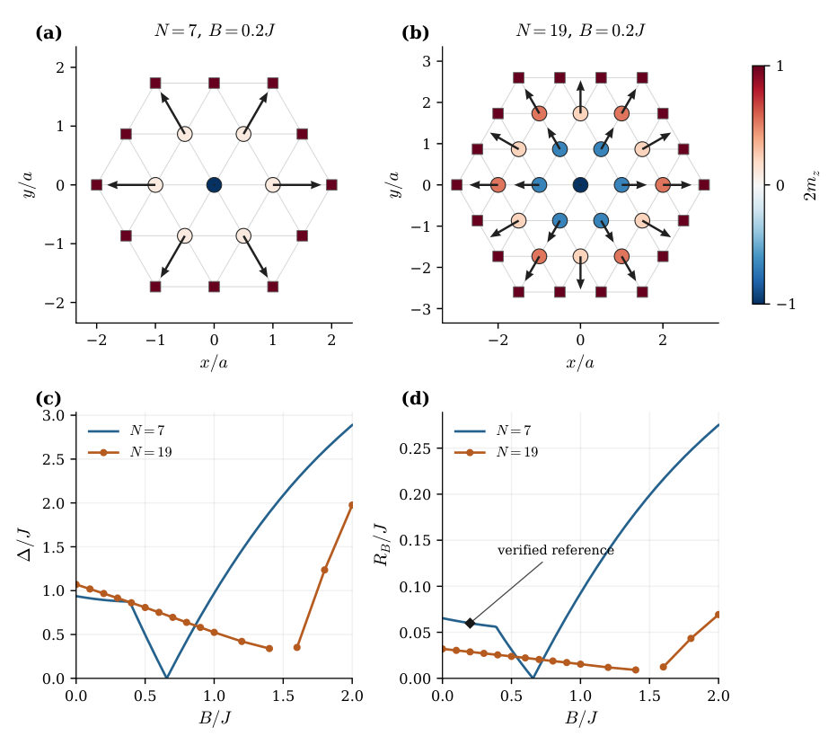
<figcaption class="paper-figure-caption"><b>Fig 2.</b> Figure 2: Physical ground-state calculations for D = 2J, K = 0 and hx = hy = 0. (a),(b) Seven- and nineteen-spin textures at B = 0.2J; colour denotes 2mz and arrows denote in-plane moments. The outer ring is the prescribed polarized exterior. (c) Spectral gaps at the sampled fields. (d) The sufficient field radius (24), evaluated from the computed gap and fixed-exterior margin. Lines connect samples and do not resolve every level crossing. The marked seven-spin reference has the rigorous lower bounds (37); the nineteen-spin values are floating-point results.</figcaption>
</figure>
<figure class="paper-figure-card">
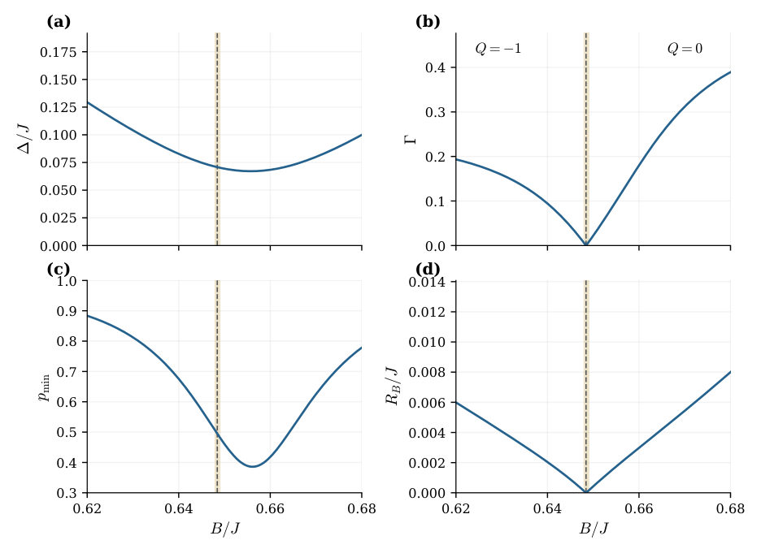
<figcaption class="paper-figure-caption"><b>Fig 3.</b> Figure 3: Seven-spin ground states with transverse field (hx, hy) = (0.2J, 0.07J). (a) Spectral gap. (b) Fixed-exterior geometric radius. (c) Minimum local polarization. (d) Sufficient field radius RB from (24). The vertical line marks the numerically located geometric singularity; the shaded interval [0.648J, 0.649J] has the rigorous bounds (38). The endpoint charges on this interval are certified to differ. For display, the exact zero of Γ and RB at the unique event is placed at its numerical location within the certified bracket of Proposition 5.2; this inserted zero is not a floating-point evaluation of the face radius. By Proposition 5.3, the active-face projection produces a linear...</figcaption>
</figure>
</div>

<p><strong>Summary.</strong> This work provides a mathematically rigorous framework to quantify the stability of quantum spin textures, like skyrmions, against external magnetic field noise. By combining geometric constraints on local spin moments with spectral perturbation theory, the authors derive explicit, certified bounds on the field strength that guarantee the preservation of the topological charge. This advances the understanding of topological protection in condensed matter magnetism.</p>
<p><strong>Why it may be interesting.</strong> The rigorous, quantitative nature of the stability bounds provides a powerful theoretical tool for understanding how topological order in magnetic materials can be protected against external noise or field variations.</p>
<details>
<summary>Detailed structure</summary>
<p><strong>Main problem.</strong> The paper aims to determine the quantitative, certified limit on magnetic-field perturbations before a quantum spin texture, such as a skyrmion, loses its topological charge.</p>
<p><strong>Main result.</strong> The robustness is quantified by a geometric threshold derived from the distance to an 'inadmissible' configuration, yielding explicit bounds on field perturbations that preserve the ground-state charge.</p>
<p><strong>Method.</strong> The authors combine the geometry of local spin expectation values with spectral perturbation theory, using concepts like the Berg-Lüscher degree and weighted distances to establish rigorous bounds.</p>
<p><strong>Model / system.</strong> The study analyzes quantum spin-$s$ textures on a triangulated surface, modeled using local spin moments ($\mathbf{m}_i$) derived from a spin Hamiltonian involving exchange and Dzyaloshinskii--Moriya interactions.</p>
<p><strong>Key observables.</strong> Topological Charge (integer), Admissibility Radius ($r_w$), Spectral Gap ($\Delta_0$), and the Field Certificate ($R_B$).</p>
<p><strong>Important parameters / regimes.</strong> The field perturbation strength ($B$), the system size ($N$), and the error budgets ($\epsilon_m, \epsilon_\Delta$).</p>
<p><strong>Assumptions / limitations.</strong> The analysis is restricted to finite systems and the specific mesh geometry; the derived field certificate is not claimed to be a tunneling barrier.</p>
<p><strong>Figures summary.</strong> Figures illustrate the projection construction showing the admissible face hull, the field dependence of the spectral gap, and the calculated sufficient field radius for small spin systems.</p>
<p><strong>Paper structure.</strong> The paper develops a mathematical framework using convex geometry to define the distance to topological failure, applies spectral perturbation theory to relate state distance to moment differences, and culminates in rigorous, exact arithmetic checks on small systems.</p>
</details>
<details>
<summary>Abstract</summary>
<p>How much can a magnetic field change before a quantum spin texture loses its skyrmion charge? We address this question by combining the geometry of local spin expectation values with spectral perturbation theory. For a triangulated spin-$s$ texture, we determine the smallest change in its local moments that makes the reconstructed topological charge ill-defined, allowing unequal error bounds and fixed boundary moments. This geometric threshold yields explicit bounds on magnetic-field perturbations that preserve the ground-state charge, with $1/N$ scaling when the gap and geometric margin have positive limits. We apply the bounds to finite spin-$1/2$ systems with exchange and Dzyaloshinskii--Moriya interactions. In a rigorously verified seven-spin example, the charge changes at a single certified field while the excitation gap and all local spin polarizations remain bounded away from zero; at such a crossing the geometric margin and the field certificate vanish linearly. The results provide quantitative certificates of texture stability and clarify the limitations of spectral-gap protection.</p>
</details>
<p><sub><a href="#top">↑ back to top</a></sub></p>

<p><a id="paper-2609.14537"></a></p>
<h3 id="controlling-quantum-state-transfer-in-rooted-products"><a href="http://arxiv.org/abs/2609.14537v1">Controlling quantum state transfer in rooted products</a></h3>
<p><strong>Authors:</strong> Addison Ballif, Christino Tamon, Gabriel Tucker<br>
<strong>Type:</strong> theory · <strong>Category:</strong> other · <strong>PDF:</strong> <a href="https://arxiv.org/pdf/2609.14537v1">https://arxiv.org/pdf/2609.14537v1</a><br>
<strong>Analysis basis:</strong> full PDF text, analyzed in chunks
<strong>Topic relevance:</strong> <code>analog quantum simulation</code> <strong>1/5</strong></p>
<div class="figure-strip-hint">↔ Scroll figures horizontally</div>
<div class="paper-figures-scroll">
<figure class="paper-figure-card">
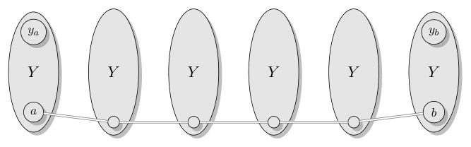
<figcaption class="paper-figure-caption"><b>Fig 1.</b> Figure 1: The rooted product XY of a base graph X with a rooted graph Y , where Y is controllable at its root. As an example, here X is a path connecting a and b. If there is state transfer between a and b in X, then there is state transfer between ya and yb in XY , for all y in Y .</figcaption>
</figure>
<figure class="paper-figure-card">
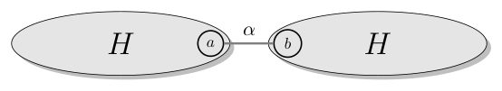
<figcaption class="paper-figure-caption"><b>Fig 2.</b> Figure 2: The rooted product of P2 with a controllable graph H: pretty good state transfer occurs symmetrically across the weighted edge (a, b) for infinitely many α (even as α →0). This complements a result of Kempton-Lippner-Yau [16] where α = 1 and H is a path with a weighted loop on a pendant vertex.</figcaption>
</figure>
<figure class="paper-figure-card">
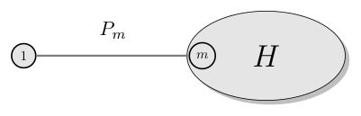
<figcaption class="paper-figure-caption"><b>Fig 3.</b> Figure 3: A 1-sum X of a path Pm and a graph H joined at vertex m. If H is controllable at m, then X is controllable at 1.</figcaption>
</figure>
<figure class="paper-figure-card">
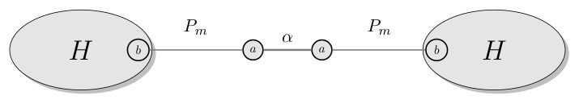
<figcaption class="paper-figure-caption"><b>Fig 4.</b> Figure 4: The rooted product of P2 with a 1-sum involving the path Pm and a controllable graph H. The path Pm can be arbitrarily lengthened (that is m →∞) and pretty good state transfer is preserved by rescaling only the middle edge.</figcaption>
</figure>
<figure class="paper-figure-card">
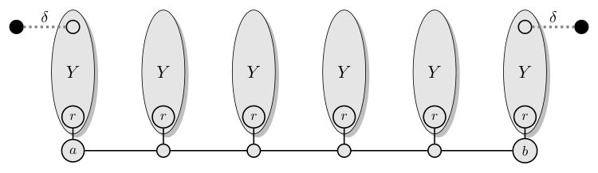
<figcaption class="paper-figure-caption"><b>Fig 5.</b> Figure 5: Efficient high-fidelity state transfer between the dark vertices in time 1/δ2 tunneling through the rooted product XY where Y is controllable at r. This is facilitated by strong cospec- trality of a and b in the base graph X (no state transfer is required between a and b). Here, as an example, X is a path.</figcaption>
</figure>
</div>

<p><strong>Summary.</strong> This paper develops a method using the rooted product of graphs to engineer quantum systems exhibiting controllable and high-fidelity quantum state transfer. By attaching carefully constructed pendant subgraphs to strongly cospectral vertices, the authors guarantee robust state transfer dynamics. This offers a powerful, constructive tool for designing quantum communication networks based on graph theory.</p>
<p><strong>Why it may be interesting.</strong> The explicit control over high-fidelity transfer time, circumventing the non-constructive nature of previous PGST results, provides concrete, implementable theoretical tools for quantum network design.</p>
<details>
<summary>Detailed structure</summary>
<p><strong>Main problem.</strong> The paper addresses the challenge of controlling quantum state transfer (QST) in graphs, aiming to achieve high-fidelity transfer even when the base graph lacks such properties.</p>
<p><strong>Main result.</strong> The rooted product construction is shown to be a powerful tool for guaranteeing high-fidelity state transfer by exploiting the creation of strongly cospectral vertex pairs.</p>
<p><strong>Method.</strong> The analysis relies heavily on spectral graph theory, utilizing the properties of the rooted product structure and controlling the condition number via pendant subgraphs.</p>
<p><strong>Model / system.</strong> The model is quantum state transfer governed by continuous-time quantum walks on graphs, analyzed using the adjacency matrix $A(X)$ and its spectral properties.</p>
<p><strong>Key observables.</strong> Transfer Fidelity $f(t)$, Perfect State Transfer (PST), Pretty Good State Transfer (PGST), and the condition number $\kappa(M)$.</p>
<p><strong>Important parameters / regimes.</strong> The small parameter $\delta$ used in adding pendant edges, and the graph structure parameters defining the rooted product $X(Y,r)$.</p>
<p><strong>Assumptions / limitations.</strong> The proof often assumes the ability to treat certain parameters (like $\alpha$) as transcendental, and requires the base graph $X$ to have strongly cospectral vertices.</p>
<p><strong>Figures summary.</strong> Figures illustrate the rooted product $XY$ structure, the 1-sum construction, and the final mechanism of high-fidelity state transfer achieved by attaching pendant edges to strongly cospectral vertices.</p>
<p><strong>Paper structure.</strong> The paper builds from establishing the general transference principle for PGST in the rooted product, to characterizing the necessary spectral conditions (Theorem 2), and finally developing a constructive method using pendant edges to guarantee high-fidelity transfer (Theorem 6).</p>
</details>
<details>
<summary>Abstract</summary>
<p>Godsil and McKay (1978) showed that the rooted product is a powerful tool for constructing non-isomorphic cospectral pairs of graphs. Despite lacking a convenient tensor product structure, we show that the rooted product is useful for constructing graphs with good quantum state transfer properties. In particular, we prove a simple transference principle: if a graph $X$ has quantum state transfer and $Y$ is a controllable graph, their rooted product $X^Y$ has quantum state transfer (inherited from $X$). This complements a folklore property of Cartesian product which preserves perfect state transfer. However, the rooted product is a significantly sparser graph and, more importantly, can be easily used to construct efficient high-fidelity state transfer even if $X$ has no quantum state transfer. Our proof exploits the fact that a rooted product creates a large number of strongly cospectral pairs of vertices and that its condition number can be controlled by its pendant subgraph.</p>
</details>
<p><sub><a href="#top">↑ back to top</a></sub></p>

<p><a id="paper-2609.14252"></a></p>
<h3 id="efficient-expectation-value-estimation-for-quantum-circuits-via-extended-stabilizer-frameworks-and-adaptive-variance-estimation"><a href="http://arxiv.org/abs/2609.14252v1">Efficient expectation value estimation for quantum circuits via extended stabilizer frameworks and adaptive variance estimation</a></h3>
<p><strong>Authors:</strong> Yunseo Hwang, Giwon Song, Kyoung Keun Park, Hyukjoon Kwon, Taehyun Kim<br>
<strong>Type:</strong> theory · <strong>Category:</strong> quantum information and computing · <strong>PDF:</strong> <a href="https://arxiv.org/pdf/2609.14252v1">https://arxiv.org/pdf/2609.14252v1</a><br>
<strong>Analysis basis:</strong> full PDF text, analyzed in chunks
<strong>Topic relevance:</strong> <code>quantum measurements</code> <strong>1/5</strong></p>
<div class="figure-strip-hint">↔ Scroll figures horizontally</div>
<div class="paper-figures-scroll">
<figure class="paper-figure-card">
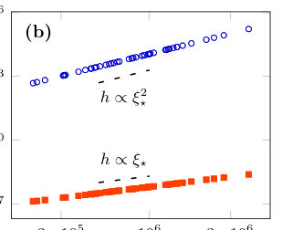
<figcaption class="paper-figure-caption"><b>Fig 1.</b> Figure 1: Sample counts hHoeffding and hCARVE as functions of ξ⋆on logarithmic axes. Dashed segments indicate the reference scalings h ∝ξ⋆and h ∝ξ2 ⋆. (a) QAOA benchmark for the N60D4 MaxE3LIN2 instance with fixed β = π/4, ϵ = 0.2, and δ = 0.2. (b) Quantum-kernel benchmark for 100 kernel values K(x′, x) constructed from 10 independent random vectors sampled uniformly from [0, 2π]64.</figcaption>
</figure>
<figure class="paper-figure-card">
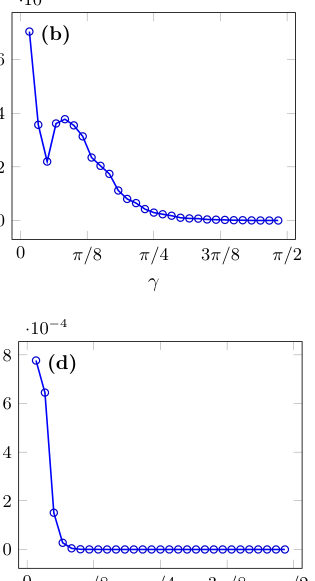
<figcaption class="paper-figure-caption"><b>Fig 2.</b> Figure 2: QAOA results for MaxE3LIN2 instances N20D3 and N60D4. (a) Estimated and exact objective value E(γ) for the N20D3 instance. (b) Conservative empirical relative variance ˆη2 for the N20D3 instance. (c) Estimated objective value E(γ) for the N60D4 instance. (d) Conservative empirical relative variance ˆη2 for the N60D4 instance.</figcaption>
</figure>
<figure class="paper-figure-card">
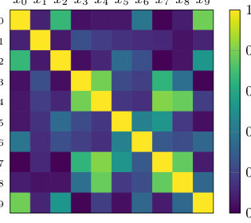
<figcaption class="paper-figure-caption"><b>Fig 3.</b> Figure 3: Quantum kernel matrices K(xi, xj) for 10 independent vectors xi drawn uniformly from [0, 2π]2 in the two-qubit setting (n = 2). (a) Estimated kernel matrix. (b) Exact kernel matrix. Rows and columns use the same ordering of data points, and both panels use the same linear color scale from 0 to 1.</figcaption>
</figure>
<figure class="paper-figure-card">
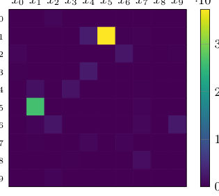
<figcaption class="paper-figure-caption"><b>Fig 4.</b> Figure 4: Empirical relative variance matrices ˆη2(xi, xj) for (a) two qubits (n = 2) and (b) 64 qubits (n = 64). Rows and columns correspond to the same ordering of data points. The panels use independent linear color scales, as indicated by their respective colorbars.</figcaption>
</figure>
<figure class="paper-figure-card">
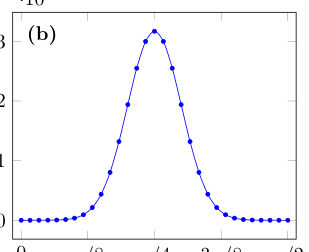
<figcaption class="paper-figure-caption"><b>Fig 5.</b> Figure 5: Gate-wise stabilizer extent ξ⋆as a function of γ for (a) the N20D3 instance and (b) the N60D4 instance.</figcaption>
</figure>
</div>

<p><strong>Summary.</strong> This work presents an advanced classical simulation framework to estimate expectation values for quantum circuits, particularly those with non-Clifford gates. By integrating an adaptive variance estimation protocol (CARVE) with the Extended Stabilizer Simulation (ESSENCE), the authors achieve a significant reduction in required sample complexity. This makes the simulation of complex quantum computations much more efficient in practice.</p>
<p><strong>Why it may be interesting.</strong> The development of adaptive sampling techniques that improve upon worst-case bounds (like Hoeffding's) is crucial for making quantum simulation algorithms practical for larger, more complex quantum circuits.</p>
<details>
<summary>Detailed structure</summary>
<p><strong>Main problem.</strong> The paper addresses the challenge of efficiently estimating expectation values for quantum circuits containing non-Clifford gates, which typically leads to exponential classical simulation overhead.</p>
<p><strong>Main result.</strong> The proposed framework reduces the runtime dependence on the magic monotone from a quadratic to a linear scaling in the low-variance regime by employing an adaptive variance estimation protocol.</p>
<p><strong>Method.</strong> It combines the Extended Stabilizer Simulation (ESSENCE) framework with a Circuit-Adaptive Reduction via Variance Estimation (CARVE) protocol to sample expectation values efficiently.</p>
<p><strong>Model / system.</strong> The system modeled is general quantum circuits acting on $n$ qubits, composed of Clifford and non-Clifford gates. The analysis also relates to the decomposition of CPTP maps using dyadic channels.</p>
<p><strong>Key observables.</strong> Expectation value $\mu_{C,O} = \langle \psi|O|\psi
angle$, Stabilizer Extents ($\xi(C)$, $\xi_{\star}(C)$), and empirical variance ($s^2$).</p>
<p><strong>Important parameters / regimes.</strong> Error tolerance ($\epsilon$), confidence level ($\delta$), and the gate-wise stabilizer extent ($\xi_{\star}$).</p>
<p><strong>Assumptions / limitations.</strong> The efficiency gains are shown to hold in the low-variance regime, and the theoretical proofs rely on the assumption that the gate satisfies a 'lifting lemma' condition.</p>
<p><strong>Figures summary.</strong> Figures compare sample counts ($h_{	ext{Hoeffding}}$ vs. $h_{	ext{CARVE}}$) showing significant sample reduction, and heatmaps illustrate the estimation of kernel matrices for QAOA and quantum kernel methods.</p>
<p><strong>Paper structure.</strong> The paper first introduces the problem of expectation value estimation, then details the ESSENCE framework, and finally integrates CARVE to provide a tighter, adaptive stopping rule, culminating in complexity proofs and empirical validation on QAOA and kernel methods.</p>
</details>
<details>
<summary>Abstract</summary>
<p>Classical simulability of quantum circuits plays a central role in characterizing and quantifying quantum computational advantage. Typically, the presence of non-Clifford gates introduces an exponential runtime overhead for classically estimating expectation values of observables. In this work, we introduce an efficient simulation framework that integrates the sum-over-Clifford method with quasi-probability-based stabilizer simulation to directly estimate expectation values. To optimize efficiency, we incorporate a circuit-adaptive reduction via variance estimation protocol, which terminates simulations once an empirical confidence bound is sufficient to guarantee the prescribed error tolerance. Our method circumvents overly conservative Hoeffding's inequality, thereby reducing the dependence on the gate-wise stabilizer extent from quadratic to linear in the low-variance regime, while maintaining the same space complexity as previous approaches. We explicitly prove the sample-complexity reduction for random quantum circuits and T-doped Clifford circuits and also empirically validate these advantages in the quantum approximate optimization algorithm and quantum kernel method.</p>
</details>
<p><sub><a href="#top">↑ back to top</a></sub></p>

<p><a id="paper-2609.15411"></a></p>
<h3 id="exact-quantum-circuits-for-a-heisenberg-triangle-with-dzyaloshinskii-moriya-interaction"><a href="http://arxiv.org/abs/2609.15411v1">Exact quantum circuits for a Heisenberg triangle with Dzyaloshinskii-Moriya interaction</a></h3>
<p><strong>Authors:</strong> Andrey Zhukov<br>
<strong>Type:</strong> theory · <strong>Category:</strong> quantum information and computing · <strong>PDF:</strong> <a href="https://arxiv.org/pdf/2609.15411v1">https://arxiv.org/pdf/2609.15411v1</a><br>
<strong>Analysis basis:</strong> full PDF text, analyzed in chunks
<strong>Topic relevance:</strong> <code>analog quantum simulation</code> <strong>1/5</strong></p>
<div class="figure-strip-hint">↔ Scroll figures horizontally</div>
<div class="paper-figures-scroll">
<figure class="paper-figure-card">
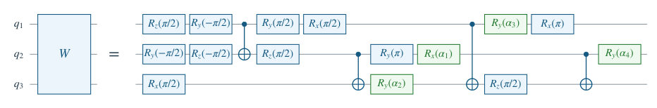
<figcaption class="paper-figure-caption"><b>Fig 1.</b> Figure 2: Explicit basis change W for arbitrary pure DM couplings. Green gates have coupling-dependent angles αi; blue gates are fixed.</figcaption>
</figure>
<figure class="paper-figure-card">
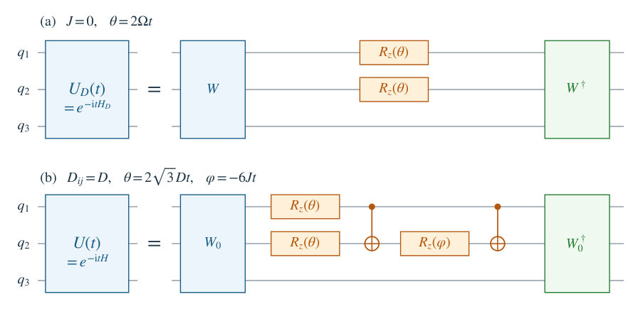
<figcaption class="paper-figure-caption"><b>Fig 2.</b> Figure 3: Exact evolution under the Hamiltonian (2.1) using the basis change shown in Fig. 2. (a) Pure DM, J = 0, with arbitrary couplings: 8 CNOT gates. (b) Equal Heisenberg–DM bonds, with W0 = W(1, 1, 1): 10 CNOT gates. Each basis-change block contains 4 CNOT gates. The central rotations describe evolution in the transformed basis; the CNOT pair in (b) implements R(12) ZZ (φ).</figcaption>
</figure>
<figure class="paper-figure-card">
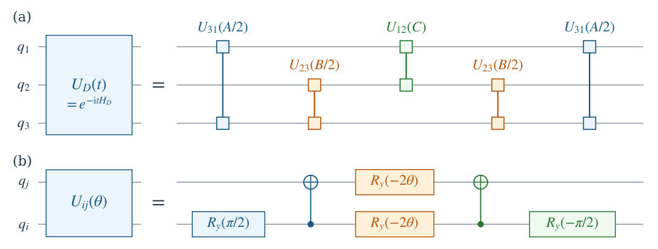
<figcaption class="paper-figure-caption"><b>Fig 3.</b> Figure 4: (a) Exact evolution of the whole DM triangle for the analytical angles A, B, C of Eq. (A.8). (b) Implementation of a single DM gate with 2 CNOT gates.</figcaption>
</figure>
<figure class="paper-figure-card">
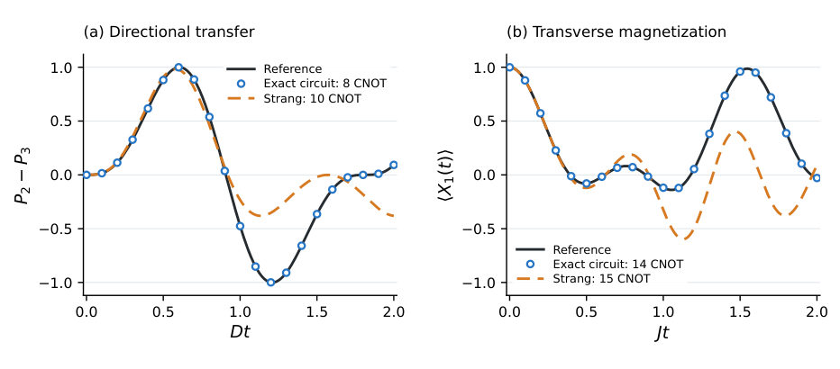
<figcaption class="paper-figure-caption"><b>Fig 4.</b> Figure 5: (a) Directional transfer in a pure DM triangle: J = 0, all Dij = D &gt; 0, initial state |100⟩. (b) Transverse magnetization in the full model (4.2) from |+00⟩. Solid lines: exact reference evolution. Open markers: exact quantum circuits. Dashed lines: one symmetric Strang step over the three full bonds. The dashed curve in panel (a) uses the linear parameters AS, BS, CS. Replacing them by the analytical angles in Eq. (A.8) reproduces the exact curve with the same 10 CNOT gates. The exact circuits require at most 8 and 14 CNOT gates in (a) and (b); the Strang circuits require at most 10 and 15, respectively.</figcaption>
</figure>
<figure class="paper-figure-card">
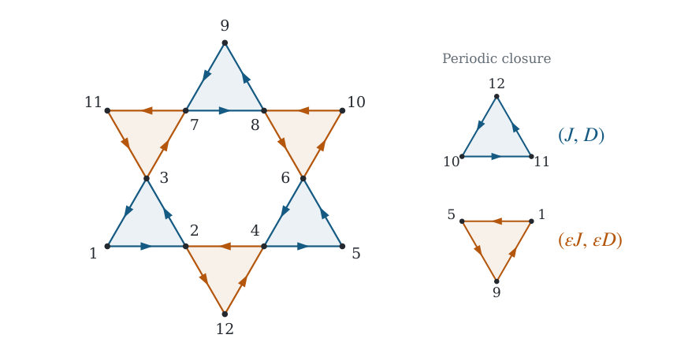
<figcaption class="paper-figure-caption"><b>Fig 5.</b> Figure 6: The 12-spin periodic kagome cluster used in the calculation. The star shows six triangles; the two triangles on the right complete the periodic bonds. Repeated node labels denote the same spins, so the full cluster contains four upward and four downward triangles. Blue and orange triangles carry couplings (J, D) and (εJ, εD), respectively. Arrows specify the cyclic DM orientations.</figcaption>
</figure>
</div>

<p><strong>Summary.</strong> This paper develops highly efficient, exact quantum circuits to simulate the dynamics of a Heisenberg triangle model incorporating Dzyaloshinskii-Moriya interaction. By employing basis transformations, the authors achieve low CNOT gate counts for both pure DM and full coupling regimes. This work is crucial for advancing digital quantum simulation of frustrated magnetic materials.</p>
<p><strong>Why it may be interesting.</strong> This work provides concrete, gate-efficient blueprints for simulating complex magnetic interactions (like DM coupling) on quantum hardware, directly addressing resource estimation for quantum simulation.</p>
<details>
<summary>Detailed structure</summary>
<p><strong>Main problem.</strong> The paper aims to construct exact quantum circuits for simulating the time evolution of a three-spin Heisenberg triangle system that includes the Dzyaloshinskii-Moriya (DM) interaction.</p>
<p><strong>Main result.</strong> Exact circuits were derived for various coupling regimes, requiring at most 8 CNOT gates for pure DM evolution and at most 14 CNOT gates for the full evolution with unequal couplings.</p>
<p><strong>Method.</strong> The authors utilized basis transformations and local spin rotations to decompose the time evolution operator into a sequence of fundamental quantum gates, minimizing the required CNOT count.</p>
<p><strong>Model / system.</strong> The system is a three-spin Heisenberg triangle governed by a Hamiltonian combining isotropic exchange ($J$) and the DM interaction ($D_{ij}$). The results are tested on a 12-spin kagome lattice.</p>
<p><strong>Key observables.</strong> The circuit complexity measured by the number of CNOT gates, and physical observables like transverse magnetization $\langle X_1(t) 
angle$.</p>
<p><strong>Important parameters / regimes.</strong> The coupling constants $J$ (exchange) and $D_{ij}$ (DM coupling), and the target accuracy for simulation.</p>
<p><strong>Assumptions / limitations.</strong> The constructions provide <em>exact</em> circuits, meaning the gate count is independent of the evolution time. Time splitting remains approximate when simulating neighboring triangles on the kagome lattice.</p>
<p><strong>Figures summary.</strong> Figures illustrate the exact evolution circuits for pure DM and equal Heisenberg-DM bonds, comparing the gate counts to approximate methods like Strang splitting. Figure 6 shows the 12-spin kagome cluster used for testing.</p>
<p><strong>Paper structure.</strong> The paper details the Hamiltonian, derives the circuit decompositions for pure DM and full evolution using basis changes, and then applies these local exact blocks to simulate larger structures like the kagome lattice.</p>
</details>
<details>
<summary>Abstract</summary>
<p>We construct exact quantum circuits for a three-spin Heisenberg triangle with Dzyaloshinskii-Moriya (DM) interaction. A change of basis reduces pure DM evolution with arbitrary couplings to two single-qubit rotations, giving a circuit with at most 8 CNOT gates. When $J$ and $D$ are each the same on all bonds, one fixed basis gives a circuit with at most 10 CNOT gates for any real $J,D,t$. Local spin rotations extend the construction to a family with unequal DM couplings and nonzero exchange, requiring at most 14 CNOT gates. All circuits act on the full Hilbert space. An alternative pure DM implementation uses five two-qubit DM gates: analytically retuning the angles of one symmetric Strang step makes it exact. A 12-spin kagome example illustrates the use of these exact local blocks in lattice simulation.</p>
</details>
<p><sub><a href="#top">↑ back to top</a></sub></p>

<p><a id="paper-2609.15842"></a></p>
<h3 id="instantiating-microcrypt-obstacles-and-opportunities-via-tailored-state-certification"><a href="http://arxiv.org/abs/2609.15842v1">Instantiating Microcrypt: Obstacles and opportunities via tailored state certification</a></h3>
<p><strong>Authors:</strong> Jose Carrasco, Jens Eisert, Soumik Ghosh, Dominik Hangleiter, Nicky Kai Hong Li, Ryan Sweke<br>
<strong>Type:</strong> theory · <strong>Category:</strong> quantum information and computing · <strong>PDF:</strong> <a href="https://arxiv.org/pdf/2609.15842v1">https://arxiv.org/pdf/2609.15842v1</a><br>
<strong>Analysis basis:</strong> full PDF text, analyzed in chunks
<strong>Topic relevance:</strong> <code>quantum measurements</code> <strong>1/5</strong></p>
<div class="figure-strip-hint">↔ Scroll figures horizontally</div>
<div class="paper-figures-scroll">
<figure class="paper-figure-card">
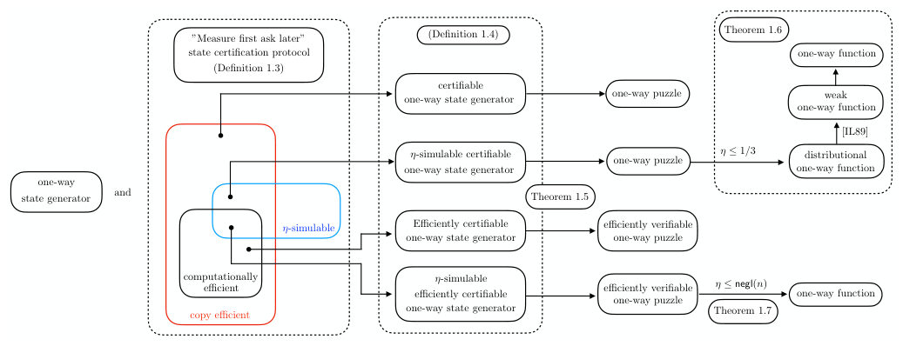
<figcaption class="paper-figure-caption"><b>Fig 1.</b> Figure 1: Summary of the main definitions and constructions developed in this work (where 𝑛is taken as the security parameter of the OWSG). Theorem 1.2 below is proven by showing that there exists an 𝜂-simulable and computa- tionally efficient &quot;measure first, ask later&quot; state certification protocol for the OWSG obtained via the Search HPS assumption, and therefore one can construct a OWF by the implications of either Theorem 1.6 or Theorem 1.7. As we discuss in Section 1.1.3, Theorem 1.7 yields a simpler OWF, by virtue of not passing through a distributional OWF.</figcaption>
</figure>
<figure class="paper-figure-card">
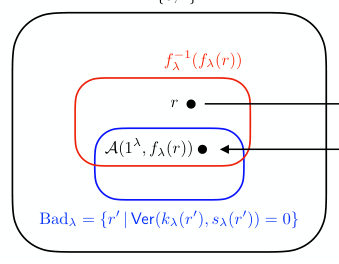
<figcaption class="paper-figure-caption"><b>Fig 2.</b> Figure 2: An illustration of a “problematic” adversary for the function {𝑓𝜆= 𝑠𝜆}, which on input 𝑠𝜆(𝑟) outputs some 𝑟′ ∈𝑓−1 𝜆(𝑓𝜆(𝑟)) ∩Bad𝜆.</figcaption>
</figure>
</div>

<p><strong>Summary.</strong> This theoretical work analyzes the utility of Hamiltonian phase state (HPS) assumptions for quantum cryptography. The authors prove that these assumptions are too strong, as their truth implies the existence of classical one-way functions, thus blocking the realization of 'Microcrypt.' However, the work provides a novel, quantum-based toolset for constructing verifiable classical cryptographic puzzles.</p>
<p><strong>Why it may be interesting.</strong> It provides a deep theoretical link between fundamental assumptions in quantum information (HPS) and classical computational hardness (OWFs), offering a new quantum assumption for classical cryptography.</p>
<details>
<summary>Detailed structure</summary>
<p><strong>Main problem.</strong> The paper investigates whether the Hamiltonian phase state (HPS) assumptions can be used to instantiate 'Microcrypt'—quantum cryptography protocols that function even if classical one-way functions do not exist.</p>
<p><strong>Main result.</strong> The authors prove that if the HPS assumptions hold, then one-way functions (OWFs) must exist, thereby eliminating the possibility of genuine Microcrypt instantiation via this route.</p>
<p><strong>Method.</strong> The core method involves constructing One-Way Puzzles (OWPs) from one-way state generators using tailored "measure first, ask later" state certification protocols, generalizing prior techniques.</p>
<p><strong>Model / system.</strong> The focus is on the theoretical assumptions surrounding Hamiltonian phase states (HPS) and their ability to generate pseudorandom and one-way state generators (PRSG and OWSG) for cryptographic applications.</p>
<p><strong>Key observables.</strong> The existence of one-way functions (OWFs) and the efficiency/verifiability of constructed One-Way Puzzles (OWPs).</p>
<p><strong>Important parameters / regimes.</strong> The relationship between the efficiency of classical post-processing in state certification protocols and the resulting cryptographic hardness.</p>
<p><strong>Assumptions / limitations.</strong> The primary assumption tested is the truth of the Hamiltonian phase state (HPS) assumptions.</p>
<p><strong>Figures summary.</strong> Not specified, but the notes indicate Figure 1 summarizes definitions and constructions relating different types of state certification protocols.</p>
<p><strong>Paper structure.</strong> The paper establishes the context of Microcrypt and HPS assumptions, develops a general construction method for OWPs from OWSGs using state certification, and then proves the implication that HPS assumptions imply the existence of OWFs.</p>
</details>
<details>
<summary>Abstract</summary>
<p>Recent work has introduced the Hamiltonian phase state (HPS) assumptions, which postulate that Hamiltonian phase states can be used to instantiate pseudorandom and one-way state generators. Additionally, it has been conjectured that these assumptions can be true, even if one-way functions do not exist. This is exciting, because if true, then the HPS assumptions provide a route to the instantiation of Microcrypt. In this work we falsify this conjecture, by proving that if the HPS assumptions are true, then one-way functions exist. While this removes the possibility of instantiating genuine Microcrypt cryptography with Hamiltonian phase states, it shows that the HPS assumptions provide novel inherently quantum assumptions for the construction of classical cryptography. Technically we achieve this via a method for the construction of one-way puzzles from one-way state generators and tailored "measure first, ask later" state certification protocols. This generalizes prior constructions of one-way puzzles from one-way state generators via classical shadows and allows us to relate properties of the one-way puzzle to properties of the state certification protocol used in the construction. Specifically, if the state certification protocol admits efficient classical post-processing then one obtains an efficiently verifiable one-way puzzle, and if the state certification protocol can be efficiently classically simulated in a certain sense, then one obtains a classical one-way puzzle, which implies one-way functions. The latter observation allows us to prove that the HPS assumptions imply one-way functions, by exploiting properties of state certification protocols for phase states. The former observation provides a new toolbox for the construction of efficiently verifiable one-way puzzles by exploiting tailored state certification protocols for pseudorandom and one-way state generators.</p>
</details>
<p><sub><a href="#top">↑ back to top</a></sub></p>

<p><a id="paper-2609.15287"></a></p>
<h3 id="klein-tunneling-of-dirac-fermions-through-electromagnetic-barriers"><a href="http://arxiv.org/abs/2609.15287v1">Klein Tunneling of Dirac Fermions through Electromagnetic Barriers</a></h3>
<p><strong>Authors:</strong> Lingang Zhang, Hua Chen<br>
<strong>Type:</strong> theory · <strong>Category:</strong> other · <strong>PDF:</strong> <a href="https://arxiv.org/pdf/2609.15287v1">https://arxiv.org/pdf/2609.15287v1</a><br>
<strong>Analysis basis:</strong> full PDF text, analyzed in chunks
<strong>Topic relevance:</strong> <code>interference shaping light</code> <strong>1/5</strong></p>
<div class="figure-strip-hint">↔ Scroll figures horizontally</div>
<div class="paper-figures-scroll">
<figure class="paper-figure-card">
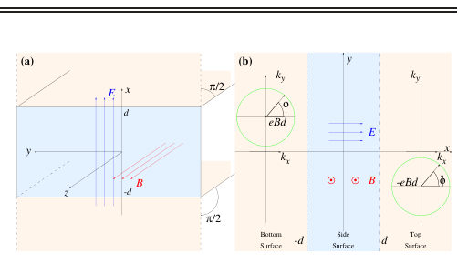
<figcaption class="paper-figure-caption"><b>Fig 1.</b> FIG. 1. (a) Schematic of a 3D topological insulator slab un- der designed electromagnetic fields. (b) Effective unwrapped electromagnetic barriers with the in-plane electric E and per- pendicular magnetic B field confined in the side surface region |x| &lt; d.</figcaption>
</figure>
<figure class="paper-figure-card">
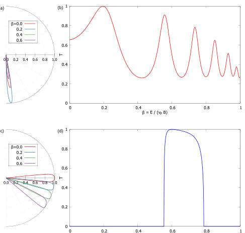
<figcaption class="paper-figure-caption"><b>Fig 2.</b> FIG. 2. Polar graph of transmission probability T (φ) of Dirac fermions through the electromagnetic barrier in the (a) magnetic and (c) electric regimes at fixed energy ǫ = 3.7ℏvF/l′ B and ǫ = 3.7ℏvF/l′ E, and barrier width d = 3.67l′ B and d = 3l′ E, respectively, for various β. The radial axis gives transmission T ranging from T = 0 at the center to T = 1 at the outermost semicircle. Line plot of T as a function of β in the (b) magnetic and (d) electric regimes at fixed energy ǫ = 3.7ℏvF/l′ B and ǫ = 3.7ℏvF/l′ E, incident angel φ = arcsin(−0.995) and φ = arcsin(−0.6), and barrier width d = 3.67l′ B and d = 3l′ E, respectively.</figcaption>
</figure>
<figure class="paper-figure-card">
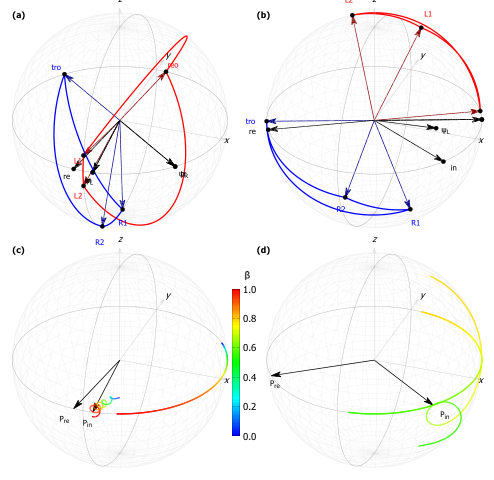
<figcaption class="paper-figure-caption"><b>Fig 3.</b> FIG. 3. Geometric phase on the Bloch sphere. The solid angles Ω(±d) covered by the geodesic triangles at the in- terfaces of adjacent surfaces x = ±d with fixed parame- ters (φ, ǫlB/ℏvF, d/lB, β) = (arcsin(−0.995), 3.7, 3, 0.953) and (φ, ǫlE/ℏvF, d/lE, β) = (arcsin(−0.5), 3.7, 3, 0.6) in the (a) magnetic and (b) electric regimes, respectively. The corre- sponding trajectories of pseudospin polarization in the (c) magnetic and (d) electric regimes with β released.</figcaption>
</figure>
</div>

<p><strong>Summary.</strong> This theoretical work analyzes how Klein tunneling behaves for Dirac fermions traversing electromagnetic barriers. By exploiting Lorentz covariance, the authors derive solutions for different field regimes, showing that the transmission is controllable by the ratio of electric to magnetic fields. This offers a theoretical blueprint for engineering novel electronic devices based on field-controlled quantum transport.</p>
<p><strong>Why it may be interesting.</strong> The geometric interpretation of the interference phase using solid angles on the Bloch sphere provides a novel, visual framework for understanding quantum transport phenomena in relativistic electron systems.</p>
<details>
<summary>Detailed structure</summary>
<p><strong>Main problem.</strong> The paper investigates the phenomenon of Klein tunneling for Dirac fermions when passing through barriers subjected to generalized, spatially varying electromagnetic potentials.</p>
<p><strong>Main result.</strong> The transmission of Dirac fermions through these barriers is highly dependent on the electromagnetic field configuration, exhibiting Fabry-Pérot oscillations in the magnetic regime and perfect transmission at normal incidence in the electric regime.</p>
<p><strong>Method.</strong> The analysis involves solving the manifestly covariant Dirac equation by exploiting Lorentz covariance to derive general solutions in different field regimes, followed by matching wave functions at the interfaces using transfer matrix formalism.</p>
<p><strong>Model / system.</strong> The system models Dirac fermions, relevant to topological insulators, propagating through a structure defined by bottom, side, and top surfaces, governed by the Dirac equation with electromagnetic potentials.</p>
<p><strong>Key observables.</strong> Transmission probability (T), interference phase ($\Phi$), and the solid angles ($\Omega$) on the Bloch sphere.</p>
<p><strong>Important parameters / regimes.</strong> The critical field ratio $E/B = v_F$ separates the magnetic and electric regimes; the drift velocity $v$ is a key parameter.</p>
<p><strong>Assumptions / limitations.</strong> Evanescent waves are neglected in the discussion of Klein tunneling, and the analysis relies on matching wave functions at the interfaces.</p>
<p><strong>Figures summary.</strong> Figure 2 shows polar and line plots of transmission probability T in magnetic and electric regimes. Figure 3 displays the geometric phase on the Bloch sphere using solid angles $\Omega(\pm d)$.</p>
<p><strong>Paper structure.</strong> The paper first derives general solutions by exploiting Lorentz covariance for Dirac fermions in $\mathbf{E}$ and $\mathbf{B}$ fields. It then applies these solutions to model Klein tunneling through a heterojunction, calculating transmission probability via transfer matrices and interpreting the phase geometrically.</p>
</details>
<details>
<summary>Abstract</summary>
<p>The Lorentz covariance of relativistic Dirac equations serves as a fundamental principle underlying the laws of electromagnetism across different inertial frames. Exploiting the covariance, we obtain the general solutions for Dirac fermions under both the in-plane electric $\boldsymbol{E}$ and perpendicular magnetic $\boldsymbol{B}$ fields, which reduce to either a magnetic or electric field in the inertial frame with drift velocity along the $\boldsymbol{E}\times\boldsymbol{B}$ direction. This dichotomy defines the magnetic and electric regimes, separated by the critical field ratio $E/B=v_\text{F}$ with $v_\text{F}$ denoting the Fermi velocity of Dirac fermions. Using these solutions, we revisit Klein tunneling through a heterojunction with generalized electromagnetic potentials. In the magnetic regime, the transmission exhibits oscillations governed by the Fabry-Pérot interference. In the electric regime, perfect transmission occurs at normal incidence in the drifted frame. The interference phase is further analyzed in terms of the solid angles on the Bloch sphere, providing a geometric interpretation of Klein tunneling. Finally, we briefly discuss the relation between the tilting of Dirac cones and the in-plane electric field, establishing the correspondence of the undertilted and overtilted cases to the magnetic and electric regimes, respectively. Our findings reveal the manipulation of Klein tunneling by electromagnetic fields, offering a theoretical basis for designing novel electronic devices.</p>
</details>
<p><sub><a href="#top">↑ back to top</a></sub></p>

<p><a id="paper-2609.13723"></a></p>
<h3 id="layer-and-orbital-selective-mott-physics-driving-dimensional-crossover-in-nickelate-superlattices"><a href="http://arxiv.org/abs/2609.13723v1">Layer- and Orbital-Selective Mott Physics Driving Dimensional Crossover in Nickelate Superlattices</a></h3>
<p><strong>Authors:</strong> Minjae Kim, Byungmin Sohn, Sangjae Lee<br>
<strong>Type:</strong> theory · <strong>Category:</strong> strongly correlated electrons · <strong>PDF:</strong> <a href="https://arxiv.org/pdf/2609.13723v1">https://arxiv.org/pdf/2609.13723v1</a><br>
<strong>Analysis basis:</strong> full PDF text, analyzed in chunks
<strong>Topic relevance:</strong> <code>Keldysh / 2PI / non-Gaussian methods</code> <strong>1/5</strong></p>
<div class="figure-strip-hint">↔ Scroll figures horizontally</div>
<div class="paper-figures-scroll">
<figure class="paper-figure-card">
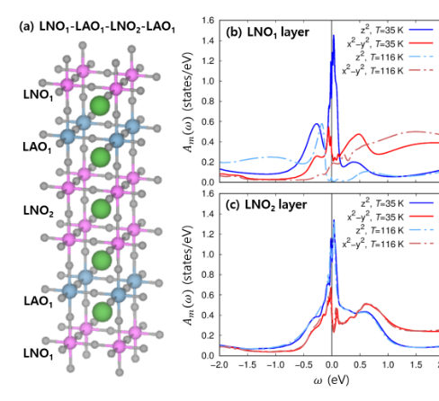
<figcaption class="paper-figure-caption"><b>Fig 1.</b> Figure 1. Temperature-dependent, orbitally-resolved den- sity of states of [LaNiO3]1-[LaAlO3]1-[LaNiO3]2-[LaAlO3]1 (LNO1-LAO1-LNO2-LAO1) superlattice in the compressive strain from the LaAlO3 substrate. (a) Crystal structure of LNO1-LAO1-LNO2-LAO1 superlattice. Magenta, blue, gray, and green spheres present Ni, Al, O, and La atoms, respec- tively. (b) Density of states of the LNO1 layer. (c) Density of states of the LNO2 layer.</figcaption>
</figure>
<figure class="paper-figure-card">
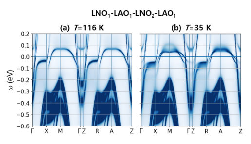
<figcaption class="paper-figure-caption"><b>Fig 2.</b> Figure 3. Temperature-dependent, momentum-resolved spec- tral function in LNO1-LAO1-LNO2-LAO1. (a) The spectral function at 116 K. (b) The spectral function at 35 K.</figcaption>
</figure>
<figure class="paper-figure-card">
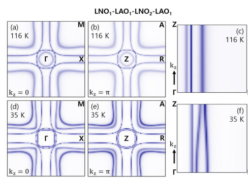
<figcaption class="paper-figure-caption"><b>Fig 3.</b> Figure 2. Temperature-dependent Fermi surfaces of LNO1- LAO1-LNO2-LAO1. (a)–(c) Fermi surfaces above the layer- and orbital-selective Mott transition (LOSMT) temperature TLOSMT (T = 116 K), and (d)–(f) those below TLOSMT (T = 35 K). (a) Fermi surfaces in the kz = 0 plane at 116 K. (b) Fermi surfaces in the kz = π plane at 116 K. (c) Fermi surfaces showing the dispersion along the kz direction at 116 K. (d) Fermi surfaces in the kz = 0 plane at 35 K. (e) Fermi surfaces in the kz = π plane at 35 K. (f) Fermi surfaces showing the dispersion along the kz direction at 35 K.</figcaption>
</figure>
<figure class="paper-figure-card">

<figcaption class="paper-figure-caption"><b>Fig 4.</b> Figure 4. Self-energies on the real frequency axis in LNO1- LAO1-LNO2-LAO1 at 35 K, below the LOSMT temperature. (a) Real part self energies. (b) Imaginary part self energies.</figcaption>
</figure>
<figure class="paper-figure-card">

<figcaption class="paper-figure-caption"><b>Fig 5.</b> Figure 5. Schematic illustration of the LOSMT and di- mensional crossover in LNO1–LAO1–LNO2–LAO1. (a) For T &gt; TLOSMT, the Mott insulating z2 orbital in LNO1, with lower and upper Hubbard bands (LHB and UHB), blocks in- terlayer electron transfer between the two LNO2 layers. (b) For T &lt; TLOSMT, a coherent quasiparticle peak (QP) devel- ops at the Fermi level in the z2 orbital of LNO1, enabling interlayer electron transfer between the two LNO2 layers.</figcaption>
</figure>
</div>

<p><strong>Summary.</strong> This work investigates a nickelate superlattice to realize a Layer- and Orbital-Selective Mott Transition (LOSMT) using DFT+DMFT calculations. The transition is shown to fundamentally change the electronic structure by activating out-of-plane conductivity via the z^2 orbital. This mechanism offers a novel pathway for engineering correlated quantum materials with tunable dimensionality.</p>
<p><strong>Why it may be interesting.</strong> The concept of using a Mott transition as a tunable knob to control dimensionality is highly relevant to understanding correlated quantum materials and emergent electronic states.</p>
<details>
<summary>Detailed structure</summary>
<p><strong>Main problem.</strong> The study aims to design quantum materials capable of manipulating dimensionality and electronic correlations by realizing a layer- and orbital-selective Mott transition (LOSMT).</p>
<p><strong>Main result.</strong> The LOSMT drives a dimensional crossover by activating out-of-plane electronic transport through the metallization of the localized apical Ni(d)-z^2 orbital, while the planar orbital remains itinerant.</p>
<p><strong>Method.</strong> The research employs advanced theoretical calculations using the Density Functional Theory plus Dynamical Mean-Field Theory (DFT+DMFT) framework.</p>
<p><strong>Model / system.</strong> The system is a nickelate superlattice, specifically a heterostructure of bilayer and monolayer LaNiO3 separated by LaAlO3 spacer, subjected to compressive strain.</p>
<p><strong>Key observables.</strong> Temperature-dependent, orbitally-resolved density of states (DOS), orbital occupations, and Fermi surface evolution.</p>
<p><strong>Important parameters / regimes.</strong> Hubbard interaction (U=6.0 eV) and Hund's coupling (J=0.7 eV); the transition temperature (T_LOSMT) is key.</p>
<p><strong>Assumptions / limitations.</strong> The analysis uses the e_g-only projector method and relies on fitting self-energies on the Matsubara axis.</p>
<p><strong>Figures summary.</strong> Figures show the crystal structure and temperature-dependent DOS, Fermi surfaces changing from 2D to quasi-2D across T_LOSMT, and self-energies confirming selective correlation effects.</p>
<p><strong>Paper structure.</strong> The paper establishes the physical system and the goal (LOSMT). It then uses DFT+DMFT calculations to track orbital occupations and DOS across temperature, demonstrating the transition mechanism and its consequence on electronic dimensionality.</p>
</details>
<details>
<summary>Abstract</summary>
<p>The design of quantum materials to manipulate dimensionality and electronic correlations is a central focus in the exploration of emergent phenomena. We propose a new correlated quantum material platform for realizing a layer- and orbital-selective Mott transition (LOSMT) in a nickelate heterostructure by combining bilayer and monolayer LaNiO$_3$ separated by a monolayer LaAlO$_3$ spacer under compressive strain from the LaAlO$_3$ substrate. The LOSMT emerges from the layer-dependent dimensional confinement of the apical Ni($d$)-$z^2$ orbital and strain-induced lifting of the orbital degeneracy. The monolayer LaNiO$_3$ exhibits an orbital-selective Mott insulating phase with a Mott gap in the Ni($d$)-$z^2$ orbital, whereas the bilayer LaNiO$_3$ exhibits a multi-orbital metallic phase, triggering the orbital-selective Mott transition upon cooling $via$ inter-layer hybridization of the Ni($d$)-$z^2$ orbitals. Calculations within the density functional theory plus dynamical mean-field theory (DFT+DMFT) framework reveal that the LOSMT drives a dimensional crossover by enabling out-of-plane electronic transport through the metallization of the localized apical Ni($d$)-$z^2$ orbital, while the planar Ni($d$)-$x^2-y^2$ orbital remains itinerant across the transition. The emergence of the LOSMT provides a new pathway for engineering correlated quantum materials toward unconventional superconductivity and Mott-transistor functionalities.</p>
</details>
<p><sub><a href="#top">↑ back to top</a></sub></p>

<p><a id="paper-2609.15764"></a></p>
<h3 id="low-depth-initial-state-preparation-for-ground-state-energy-estimation-of-two-dimensional-strongly-correlated-systems"><a href="http://arxiv.org/abs/2609.15764v1">Low-Depth Initial-State Preparation for Ground-State Energy Estimation of Two-Dimensional Strongly Correlated Systems</a></h3>
<p><strong>Authors:</strong> Ryo Watanabe, Keisuke Fujii<br>
<strong>Type:</strong> theory · <strong>Category:</strong> strongly correlated electrons · <strong>PDF:</strong> <a href="https://arxiv.org/pdf/2609.15764v1">https://arxiv.org/pdf/2609.15764v1</a><br>
<strong>Analysis basis:</strong> full PDF text, analyzed in chunks
<strong>Topic relevance:</strong> <code>analog quantum simulation</code> <strong>1/5</strong></p>
<div class="figure-strip-hint">↔ Scroll figures horizontally</div>
<div class="paper-figures-scroll">
<figure class="paper-figure-card">

<figcaption class="paper-figure-caption"><b>Fig 1.</b> FIG. 1. A bond partition of a 6 × 6 open-boundary square lattice into four matchings, Bx0, Bx1, By0, and By1 (colors indicated in the legend). For general lattice sizes with even Lx and Ly, Bx0 and By0 form perfect matchings covering all sites, while Bx1 and By1 leave boundary sites uncovered.</figcaption>
</figure>
<figure class="paper-figure-card">

<figcaption class="paper-figure-caption"><b>Fig 2.</b> FIG. 3. PEPS on a square lattice. Circles denote site tensors, connecting lines denote virtual indices of bond dimension D, and open legs denote physical spin indices of dimension d = 2.</figcaption>
</figure>
<figure class="paper-figure-card">

<figcaption class="paper-figure-caption"><b>Fig 3.</b> FIG. 2. Singlet gap ∆0/J of the open-boundary Heisenberg model. Filled circles are exact-diagonalization data fitted to a quadratic in 1/L with zero intercept; open circles are extrapo- lations. Triangles show rectangular-cluster data excluded from the fit.</figcaption>
</figure>
<figure class="paper-figure-card">

<figcaption class="paper-figure-caption"><b>Fig 4.</b> FIG. 5. Bond-dimension dependence of the ground-state fi- delity error |FSV −FPEPS| for the 4 × 4 lattice, with χ = 3D. Blue, red, and green circles represent Nb = 2, 3, and 4, respec- tively.</figcaption>
</figure>
<figure class="paper-figure-card">

<figcaption class="paper-figure-caption"><b>Fig 5.</b> FIG. 4. PEPS simulation and amplitude evaluation. (a) The message Mi,j is obtained by contracting the site tensor and its conjugate with the incoming messages. (b) A two-site gate is applied and the updated bond is truncated using the converged BP messages as an approximate environment. (c) The square roots of the BP messages are first absorbed into the site tensors, which are then decomposed by QR. The gate application and SVD are performed on the resulting smaller tensors. (d) With the physical indices fixed to a sampled configuration, each row is absorbed into a boundary MPS and compressed to bond dimension χ.</figcaption>
</figure>
</div>

<p><strong>Summary.</strong> This paper develops a method to prepare initial quantum states for estimating the ground-state energy of 2D strongly correlated systems, specifically the Hubbard model. It achieves this by leveraging the connection to the Heisenberg model via the Schrieffer-Wolff transformation and designing shallow quantum circuits. The results demonstrate feasibility for larger lattices, offering a low-cost route for quantum simulation.</p>
<p><strong>Why it may be interesting.</strong> This work provides a concrete, hardware-aware pathway to simulate complex strongly correlated physics (like high-Tc superconductivity models) using near-term quantum hardware by minimizing circuit depth.</p>
<details>
<summary>Detailed structure</summary>
<p><strong>Main problem.</strong> The primary goal is to design quantum circuits capable of estimating the ground-state energy of two-dimensional strongly correlated electron systems.</p>
<p><strong>Main result.</strong> The authors successfully designed shallow quantum circuits for the Hubbard model by embedding the Heisenberg model and demonstrated that the required preparation cost for a $10 	imes 10$ lattice is within the megaquop regime.</p>
<p><strong>Method.</strong> The approach combines the Schrieffer-Wolff transformation to map the Hubbard model to the Heisenberg model, followed by constructing a variational quantum circuit using charge-fluctuation gates.</p>
<p><strong>Model / system.</strong> The focus is on the half-filled Hubbard model and its strong-coupling limit, the antiferromagnetic spin-1/2 Heisenberg model, on a 2D lattice. The circuit preparation involves initial singlet dimer states augmented by charge-fluctuation gates.</p>
<p><strong>Key observables.</strong> Ground-state fidelity ($F_0$), ground-state energy, and the required circuit depth (estimated in $T$ gates).</p>
<p><strong>Important parameters / regimes.</strong> The lattice size ($4 	imes 4$ up to $10 	imes 10$), the coupling constant $J=4t^2/U$, and the circuit cost ($\sim 10^5$ T gates for $10 	imes 10$).</p>
<p><strong>Assumptions / limitations.</strong> The fidelity estimation relies on lower bounds derived from tensor-network simulations and Variational Monte Carlo (VMC) reference states. The circuit cost assumes Clifford+T synthesis.</p>
<p><strong>Figures summary.</strong> Figure 6 illustrates the optimization trajectory for the reference fidelity ($1-F_{ref}$) when optimizing circuit angles using tensor network gradients.</p>
<p><strong>Paper structure.</strong> The work establishes the physical problem (Hubbard model $
ightarrow$ Heisenberg model via SW), details the quantum circuit ansatz (Heisenberg state + charge-fluctuation gates), and presents results showing fidelity improvement and parameter transferability across lattice sizes.</p>
</details>
<details>
<summary>Abstract</summary>
<p>Quantum algorithms for ground-state energy estimation require initial states with non-negligible fidelity to the ground state. Guided by classical simulations, we design shallow circuits for the two-dimensional half-filled Hubbard model by first preparing an approximate Heisenberg ground state and then applying charge-fluctuation gates derived directly from the Schrieffer-Wolff (SW) generator. For the Heisenberg model, we demonstrate effective parameter transfer from a $4\times4$ lattice to lattices up to $10\times10$ without further optimization. We obtain promising lower bounds on the ground-state fidelity using tensor-network simulations, variational Monte Carlo reference states, and estimates of the ground-state energy and singlet gap. Exact $4\times4$ calculations show that the SW gates substantially improve the Hubbard ground-state fidelity of the embedded Heisenberg state. The successful Heisenberg parameter transfer supports the use of these small-lattice results to design shallow Hubbard circuits on larger lattices beyond the reach of classical simulations. For a $10\times10$ lattice, the estimated preparation cost is on the order of $10^5$ $T$ gates, including Clifford+$T$ synthesis, which is well within the megaquop regime. These results offer a route to low-cost initial-state preparation for ground-starongly correlated systems.</p>
</details>
<p><sub><a href="#top">↑ back to top</a></sub></p>

<p><a id="paper-2609.15394"></a></p>
<h3 id="object-detection-using-quantum-transfer-learning"><a href="http://arxiv.org/abs/2609.15394v1">Object Detection Using Quantum Transfer Learning</a></h3>
<p><strong>Authors:</strong> Mohammad Bahrami, Morteza Rafiee, Mohsen Norouzi<br>
<strong>Type:</strong> theory · <strong>Category:</strong> statistical mechanics · <strong>PDF:</strong> <a href="https://arxiv.org/pdf/2609.15394v1">https://arxiv.org/pdf/2609.15394v1</a><br>
<strong>Analysis basis:</strong> full PDF text, analyzed in chunks
<strong>Topic relevance:</strong> <code>quantum measurements</code> <strong>1/5</strong></p>
<div class="figure-strip-hint">↔ Scroll figures horizontally</div>
<div class="paper-figures-scroll">
<figure class="paper-figure-card">

<figcaption class="paper-figure-caption"><b>Fig 1.</b> FIG. 1: Architecture of the entanglement-enhanced hybrid classical- quantum object detection framework.</figcaption>
</figure>
<figure class="paper-figure-card">

<figcaption class="paper-figure-caption"><b>Fig 2.</b> FIG. 2: Optimization dynamics and Pareto equilibrium of the hybrid multi-task framework with the circular CNOT topology.</figcaption>
</figure>
<figure class="paper-figure-card">

<figcaption class="paper-figure-caption"><b>Fig 3.</b> FIG. 3: Thermodynamic cooling and entanglement generation during optimization with the circular CNOT topology.</figcaption>
</figure>
<figure class="paper-figure-card">

<figcaption class="paper-figure-caption"><b>Fig 4.</b> FIG. 4: Topological advantage of circular entanglement architectures in hybrid object detection.</figcaption>
</figure>
<figure class="paper-figure-card">

<figcaption class="paper-figure-caption"><b>Fig 5.</b> FIG. 6: Detection results visualization using proposed hybrid classical-quantum object detection model (the green box stands for “Prediction”, the red box shows “True Label”).</figcaption>
</figure>
</div>

<p><strong>Summary.</strong> This paper proposes a novel hybrid classical-quantum architecture for object detection, extending quantum transfer learning beyond simple classification. By formulating the learning process using a thermodynamic lens, the authors show that controlled information flow and targeted entanglement restriction, rather than maximal entanglement, are sufficient for achieving state-of-the-art performance while drastically reducing model complexity.</p>
<p><strong>Why it may be interesting.</strong> The thermodynamic interpretation of the learning loss (Helmholtz free energy) provides a deep physical framework for understanding the optimization landscape in quantum machine learning, linking information theory (entropy) directly to physical energy concepts.</p>
<details>
<summary>Detailed structure</summary>
<p><strong>Main problem.</strong> The paper addresses the challenge of performing object detection, which requires jointly learning semantic identity (classification) and continuous spatial geometry (regression), a task poorly supported by existing quantum transfer learning methods.</p>
<p><strong>Main result.</strong> The proposed hybrid model achieves high object detection performance comparable to classical baselines while significantly reducing trainable parameters, demonstrating that efficient learning relies on topology-controlled information flow rather than maximal entanglement.</p>
<p><strong>Method.</strong> It introduces a physics-informed hybrid classical-quantum architecture where visual features are mapped into a variational quantum Hilbert space partitioned for the two tasks. The learning process is formulated using a thermodynamic analogy, interpreting the loss as a variation in Helmholtz free energy.</p>
<p><strong>Model / system.</strong> The system uses a pre-trained MobileNetV2 backbone to generate features, which are then encoded into an eight-qubit variational quantum circuit. The circuit's topology (linear vs. circular CNOT) regulates information flow between the semantic and geometric subspaces.</p>
<p><strong>Key observables.</strong> mAP@0.5 (0.9448), mAP@0.5:0.95 (0.6558), bipartite von Neumann entropy (0.1688 bits for circular), and Meyer-Wallach entanglement measure (0.0370).</p>
<p><strong>Important parameters / regimes.</strong> 10,366 trainable parameters (99.31% reduction vs. classical baseline); the structure of the quantum circuit topology (linear vs. circular).</p>
<p><strong>Assumptions / limitations.</strong> The classical backbone (MobileNetV2) is kept frozen, and the learning process can be effectively modeled by interpreting the total loss as a variation in Helmholtz free energy.</p>
<p><strong>Figures summary.</strong> Figure 1 illustrates the architecture flow from MobileNetV2 through the Dressed Quantum Circuit (DQC) for object detection. Figure 6 shows visual detection results comparing the model's predictions to ground truth labels.</p>
<p><strong>Paper structure.</strong> The paper first identifies the gap in QTL for regression tasks. It then details the hybrid architecture, mapping features to a quantum state and partitioning the Hilbert space. The core contribution involves the thermodynamic formulation of the loss and comparing topological structures (linear vs. circular) to show that controlled entanglement is key to performance.</p>
</details>
<details>
<summary>Abstract</summary>
<p>Object detection requires the joint learning of semantic identity and continuous spatial geometry. Existing quantum transfer learning approaches have focused mainly on classification tasks and do not support regression. Here, we introduce a physics informed hybrid classical-quantum architecture for object detection in which a pre-trained MobileNetV2 maps visual features into an eight qubits variationally quantum Hilbert space. The Hilbert space is partitioned into two task specific subspaces for semantic classification and geometric localization. Local quantum expectation values are used to predict continuous bounding box coordinates, while circuit topology regulates the flow of quantum information between the two tasks. We compare linear and circular CNOT topologies and show that periodic boundary conditions suppress bipartite entanglement without degrading detection performance. The circular architecture reaches a bipartite von Neumann entropy of 0.1688 bits and a Meyer-Wallach entanglement measure of 0.0370, while achieving an mAP@0.5 of 0.9448 and an mAP@0.5:0.95 of 0.6558. A thermodynamic formulation further interprets the total learning loss as a variation in Helmholtz free energy. It interprets geometric localization as an effective internal energy contribution and semantic classification as an entropic contribution. These results indicate that high performance in the proposed object detection model does not require maximal entanglement. Instead, efficient learning can emerge through topology controlled information flow, targeted restriction of entanglement, and information renormalization within the Hilbert space.</p>
</details>
<p><sub><a href="#top">↑ back to top</a></sub></p>

<p><a id="paper-2609.13834"></a></p>
<h3 id="on-rare-nonresonant-regions-and-subdiffusive-transport-in-an-interacting-disordered-quantum-chain"><a href="http://arxiv.org/abs/2609.13834v1">On Rare Nonresonant Regions and Subdiffusive Transport in an Interacting Disordered Quantum Chain</a></h3>
<p><strong>Authors:</strong> A. Scardicchio, S. L. Sondhi<br>
<strong>Type:</strong> theory · <strong>Category:</strong> disordered systems and neural networks · <strong>PDF:</strong> <a href="https://arxiv.org/pdf/2609.13834v1">https://arxiv.org/pdf/2609.13834v1</a><br>
<strong>Analysis basis:</strong> full PDF text, analyzed in chunks
<strong>Topic relevance:</strong> <code>analog quantum simulation</code> <strong>1/5</strong></p>
<div class="figure-strip-hint">↔ Scroll figures horizontally</div>
<div class="paper-figures-scroll">
<figure class="paper-figure-card">

<figcaption class="paper-figure-caption"><b>Fig 1.</b> FIG. 1. The measured convergence probability of the SW iterations L = 8, 12, ..., 32 on a con-</figcaption>
</figure>
<figure class="paper-figure-card">

<figcaption class="paper-figure-caption"><b>Fig 2.</b> FIG. 2. The total rate for any event k ≥1 as a function of t. The increase is faster than t, but</figcaption>
</figure>
<figure class="paper-figure-card">

<figcaption class="paper-figure-caption"><b>Fig 3.</b> FIG. 3. The rates a2, a3, a4 from the data. The analytic result a1 = (3/2)t is the line on the top.</figcaption>
</figure>
<figure class="paper-figure-card">

<figcaption class="paper-figure-caption"><b>Fig 4.</b> FIG. 4. The rotation angles θk at step k for t = 0.03, 0.04 and L = 16, ..., 24 on about 1000</figcaption>
</figure>
<figure class="paper-figure-card">

<figcaption class="paper-figure-caption"><b>Fig 5.</b> FIG. 5. Check of locality of the V (k), A(k) required in proposition 13 in [27]. The support over</figcaption>
</figure>
</div>

<p><strong>Summary.</strong> This paper analyzes subdiffusive transport in a disordered quantum spin chain by numerically simulating the iterated Schrieffer-Wolff transformation. The authors calculate the probability that the system remains in a nonresonant state across multiple energy scales. Their results quantitatively confirm the physical mechanism responsible for the insulating bottlenecks that cause subdiffusion, offering a powerful cross-validation tool for complex theoretical proofs.</p>
<p><strong>Why it may be interesting.</strong> The work provides a physically transparent, numerical test of highly technical, constructive proofs in many-body localization and transport, which is valuable for validating theoretical frameworks in quantum physics.</p>
<details>
<summary>Detailed structure</summary>
<p><strong>Main problem.</strong> The study investigates rare nonresonant regions and the mechanism of subdiffusive transport in a one-dimensional interacting disordered quantum spin chain.</p>
<p><strong>Main result.</strong> The authors show that the survival probability of remaining nonresonant decays at most exponentially with system size, and numerically confirm the physical mechanism underlying the theoretical bounds.</p>
<p><strong>Method.</strong> The primary method involves directly implementing the iterated Schrieffer-Wolff construction and calculating scale-resolved failure rates for resonance conditions.</p>
<p><strong>Model / system.</strong> The system is a canonical one-dimensional disordered quantum spin chain described by a Hamiltonian involving local disorder fields and nearest-neighbor interactions.</p>
<p><strong>Key observables.</strong> Survival probability of remaining nonresonant through successive Schrieffer-Wolff steps; scale-resolved resonance rates ($a_k$); operator proliferation and spatial localization.</p>
<p><strong>Important parameters / regimes.</strong> System size ($L$), coupling strengths ($t, J$), and the scale index ($k$) of the Schrieffer-Wolff flow.</p>
<p><strong>Assumptions / limitations.</strong> The analysis relies on comparing direct numerical implementations against rigorous mathematical lower bounds, and assumes the validity of the iterative SW construction process.</p>
<p><strong>Paper structure.</strong> The paper progresses by first setting up the Hamiltonian and the SW framework, then performing detailed calculations of the first and subsequent scale failure rates ($a_1, a_2, \dots$), and finally comparing these quantitative results to the theoretical bounds.</p>
</details>
<details>
<summary>Abstract</summary>
<p>We study rare nonresonant regions in a canonical one-dimensional disordered quantum spin chain by directly implementing the iterated Schrieffer-Wolff construction underlying the recent work of De Roeck, Giacomin, Huveneers and Prosniak on subdiffusive transport. For finite systems, we compute the probability that a disorder realization remains nonresonant through successive scales of the flow, while separately monitoring operator proliferation and the spatial localization of dressed local observables. The survival probability decays at most exponentially with system size over the numerically accessible regime. Resolving this decay scale by scale yields failure rates associated with successive Schrieffer-Wolff steps. The first rate is obtained analytically in excellent agreement with numerics, while higher-scale rates decrease rapidly throughout the regime studied. These results support the summability mechanism required for exponentially rare but parametrically long nonresonant regions, which provide the insulating bottlenecks responsible for subdiffusive transport. At the smallest couplings studied, the survival probability under our conditions exceeds the rigorous lower bound by six to seven orders of magnitude, demonstrating how conservative the constants required by the proof are while confirming that its underlying physical mechanism is quantitatively visible at accessible scales. More broadly, our results show how direct numerical implementations can provide an independent and physically transparent test of technically demanding constructive proofs, a methodology that may become increasingly useful as machine-assisted proofs become more common.</p>
</details>
<p><sub><a href="#top">↑ back to top</a></sub></p>
<hr>
<p>
<a href="index.html">← Index</a>
 · <a href="papers_07.html">← Previous</a> · <a href="papers_09.html">Next →</a>
</p>
<hr>

</body>
</html>
